Prosedur ANOVA mengasumsikan beberapa hal mengenai struktur model dan struktur galat. Jika asumsi tersebut tidak terpenuhi, hasil dari ANOVA mungkin saja tidak valid. Oleh karena itu, pengujian asumsi sangat penting untuk diketahui.
4.1 Galat percobaaan menyebar normal
4.1.1 Prosedur Eksploratif
Secara eksploratif dalam mendeteksi kenormalan pada galat dapat menggunakan plot peluang normal (Normal probability (Q-Q) plot) dan histogram sisaan.
Metode grafis plot peluang normal (Normal probability (Q-Q) plot) memiliki sumbu vertikal plot (nilai data yang berurut) dan sumbu horizontal plot (nilai peluang normal). Untuk mendeteksi normalitas pada residual, maka pada sumbu vertikal plot NPP merupakan residual yang terurut dan pada sumbu horizontal merupakan skor peluang normal yang terurut dari residual. Jika pada NPP diperoleh garis yang lurus atau mendekati/hampir lurus maka data residual tersebut menyebar normal. Garis tersebut tidak akan betul-betul lurus sempurna karena adanya keragaman contoh. Jika dibuat plot NPP untuk data tidak normal, plot akan cenderung melengkung, dan bentuk kelengkungan tersebut dapat menjadi informasi sejauh mana penyimpangan ketidaknormalannya.
ℹ The googlesheets4 package is using a cached token for
'muh.ammarsahab@apps.ipb.ac.id'.
✔ Reading from "RAKL_P2 Rancob".
✔ Range 'Sheet1'.
Code
DataRAKL$Produksi<-as.numeric(DataRAKL$Produksi)#pastikan perlakuan dan kelompok berbentuk faktorDataRAKL$Kelompok<-as.factor(DataRAKL$Kelompok)DataRAKL$Perlakuan<-as.factor(DataRAKL$Perlakuan)aovRAKL<-aov(Produksi~Kelompok+Perlakuan,data=DataRAKL) #prosedur anovabroom::tidy(aovRAKL) |> knitr::kable()
term
df
sumsq
meansq
statistic
p.value
Kelompok
2
39.2107
19.605348
2.220614
0.1408977
Perlakuan
8
586.0398
73.254970
8.297279
0.0001896
Residuals
16
141.2607
8.828794
NA
NA
Pertama, plot Q-Q:
Code
# Plot Peluang Normal (Q-Q)plot(aovRAKL, which =2)
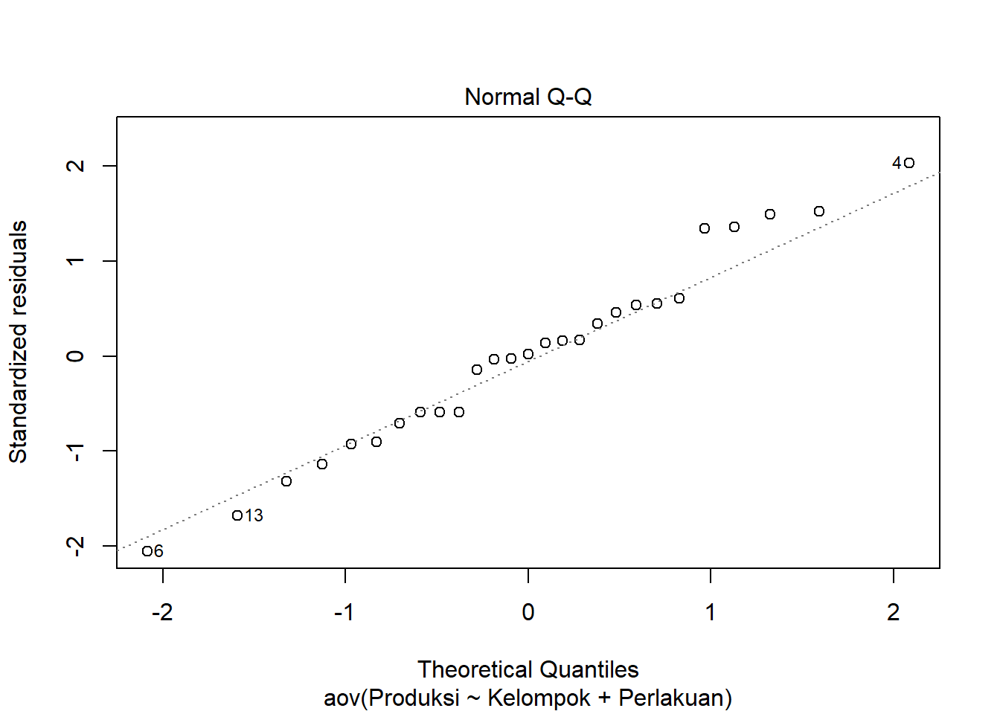
Code
#atau#qqnorm(aovRAKL$residuals); qqline(aovRAKL$residuals, col ='red')
Dari plot di atas dapat terlihat bahwa semua titik cenderung berada kira-kira di sekitar sepanjang garis diagonal tetapi ada satu titik tidak dekat dengan garis dan histogram membentuk seperti kurva sebaran normal sehingga asumsi galat percobaan menyebar normal terpenuhi. Metode qq-plot dan histogram residual di python sebagai berikut. Pertama, lakukan ANOVA:
Code
import pandas as pdimport numpy as npimport statsmodels.api as sm
C:\Users\Acer\AppData\Local\R\win-library\4.2\reticulate\python\rpytools\loader.py:39: FutureWarning: pandas.Int64Index is deprecated and will be removed from pandas in a future version. Use pandas.Index with the appropriate dtype instead.
module = _import(
C:\Users\Acer\AppData\Local\Programs\Python\PYTHON~2\lib\site-packages\statsmodels\compat\pandas.py:65: FutureWarning: pandas.Int64Index is deprecated and will be removed from pandas in a future version. Use pandas.Index with the appropriate dtype instead.
from pandas import Int64Index as NumericIndex
Code
from statsmodels.formula.api import olsimport seaborn as snsfrom matplotlib import pyplot as pltRAKLpy=pd.read_csv("https://docs.google.com/spreadsheets/d/e/2PACX-1vTi9yO_OJZ5pHMmPRlPqPxK9TydeVWI--rXAYfFfwj2v6ee-vUrQGYUGYb5zgguZ5mgu9IDhwB-dIwl/pub?gid=0&single=true&output=csv") #baca dataRAKL_lm= ols('Produksi ~ C(Perlakuan)+C(Kelompok)',data=RAKLpy).fit() #C=peubah kategoriktable = sm.stats.anova_lm(RAKL_lm, typ=2) # Type 2 ANOVA DataFrameprint(table)
sum_sq df F PR(>F)
C(Perlakuan) 586.039763 8.0 8.297279 0.000190
C(Kelompok) 39.210696 2.0 2.220615 0.140898
Residual 141.260704 16.0 NaN NaN
Buat plot:
Code
import statsmodels.api as smimport matplotlib.pyplot as plt#create Q-Q plot with 45-degree line added to plotfig = sm.qqplot(RAKL_lm.resid, line='s')plt.show()
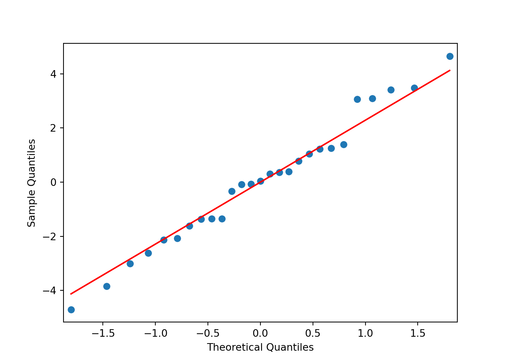
Dan untuk histogram:
Code
import seaborn as snsimport matplotlib.pyplot as pltplt.clf() #clear plot sebelumnyah=sns.histplot(RAKL_lm.resid,bins=10, kde=True)plt.show()
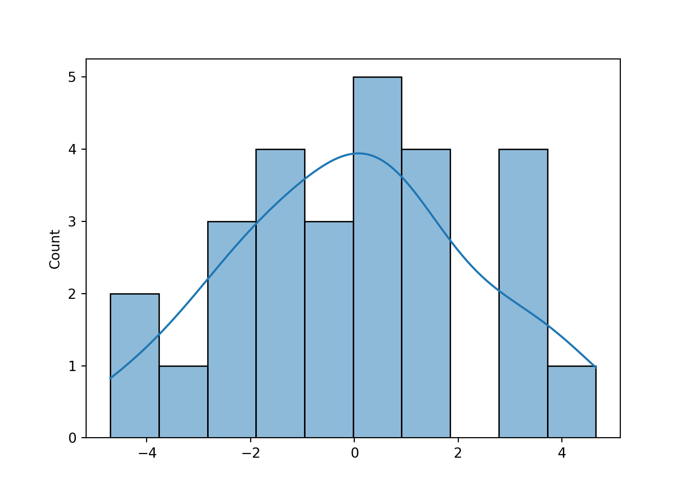
4.1.2 Uji formal untuk galat percobaan menyebar normal
secara formal dapat menggunakan beberapa uji tertentu diantaranya adalah Uji Kolmogorov-Smirnov, Uji Shapiro-Wilk, Uji Lilliefors, Uji Jarque-Bera, Uji Anderson-Darling, dsb.
Uji Shapiro Wilk memiliki statistik uji sebagai berikut:
\[
W = \frac{\left[\sum^n_{i=1} a_i x_{(i)}\right]^2}{\sum^n_{i=1}(x_i – \bar{x})^2}
\]
\(x_{(i)}\) adalah statistik tataan ke-i - angka terkecil ke-i dari sampel. \(a_{i}\) berasal dari suatu rumus berisi mean dan matriks peragam \(X\). Implementasi di R:
Code
shapiro.test(x = aovRAKL$residuals)
Shapiro-Wilk normality test
data: aovRAKL$residuals
W = 0.98096, p-value = 0.8833
Dan implementasi python:
Code
from scipy.stats import shapiroresult = (shapiro(RAKL_lm.resid))print(f"S-W statistic: {result[0]}")
S-W statistic: 0.9809552431106567
Code
print(f"p-value: {result[1]}")
p-value: 0.8832639455795288
Dari keluaran uji Shapiro-Wilk dapat dilihat nilai p-value = 0.8832 \(> \alpha = 0.05\) maka tak tolak \(H_{0}\), artinya tidak cukup bukti untuk mengatakan bahwa galat tidak menyebar normal sehingga asumsi galat percobaan menyebar normal terpenuhi.
Uji Kolmogorov-Smirnov memiliki statistik uji:
\[
D_n = \sup_{x}|F_n(x) – F(x)|
\]
Atau, jarak terbesar antara fungsi kumulatif dari sampel dan fungsi kumulatif dari sebaran normal (dalam kasus menguji kenormalan). Fungsi kumulatif dapat disesuaikan untuk sebaran yang berbeda jika ingin menguji kesesuaian dengan sebaran lain. Visualisasi dari proses ini ditunjukkan di dokumen ini.
Exact one-sample Kolmogorov-Smirnov test
data: aovRAKL$residuals
D = 0.090934, p-value = 0.964
alternative hypothesis: two-sided
Dan di python:
Code
from scipy.stats import kstestimport numpy as npresult = kstest(RAKL_lm.resid, cdf="norm",args=(np.mean(RAKL_lm.resid),np.std(RAKL_lm.resid)))print(f"K-S statistic: {result[0]}")
K-S statistic: 0.09507410791382365
Code
print(f"p-value: {result[1]}")
p-value: 0.9483937411797532
Dari keluaran diatas dapat dilihat nilai p-value = 0.964 (R) > alpha = 0.05 maka Tak Tolak \(H_{0}\), artinya tidak cukup bukti untuk mengatakan bahwa galat tidak menyebar normal sehingga dengan uji Kolmogorov-Smirnov asumsi galat percobaan menyebar normal juga terpenuhi.
Uji Lilliefors pada dasarnya merupakan modifikasi dari uji Kolmogorov Smirnov. Uji tersebut dapat dilakukan tanpa menspesifikasi mean dan simpangan baku dari sebaran normal yang hendak diuji, serta memberikan koreksi pada nilai Kolmogorov Smirnov. Implementasi di R:
Lilliefors (Kolmogorov-Smirnov) normality test
data: aovRAKL$residuals
D = 0.090934, p-value = 0.8199
Code
from statsmodels.stats.diagnostic import lillieforsD,p=lilliefors(RAKL_lm.resid,dist='norm',pvalmethod='table')print("Statistik uji: ",D)
Statistik uji: 0.09093377335390318
Code
print("p-value: ",p)
p-value: 0.8117606135583574
Dari keluaran di atas dapat dilihat nilai p-value = 0.8199 \(> /alpha = 0.05\) maka Tak Tolak \(H_{0}\), artinya tidak cukup bukti untuk mengatakan bahwa galat tidak menyebar normal sehingga dengan uji Lilliefors asumsi galat percobaan menyebar normal juga terpenuhi.
Uji Jarque-Bera membandingkan skewness dan kurtosis data dengan sebaran normal. Ini dapat dilihat dari statistik uji:
Jarque Bera Test
data: aovRAKL$residuals
X-squared = 0.31309, df = 2, p-value = 0.8551
Dan implementasi python:
Code
from scipy.stats import jarque_beraresult = (jarque_bera(RAKL_lm.resid))print("JB statistic:", result[0])
JB statistic: 0.3130851694293787
Code
print("p-value:", result[1])
p-value: 0.8550951029465681
Dari keluaran diatas dapat dilihat nilai p-value = 0.8551 > alpha = 0.05 maka Tak Tolak H0, artinya tidak cukup bukti untuk mengatakan bahwa galat tidak menyebar normal sehingga dengan uji Jarque-Bera asumsi galat percobaan menyebar normal juga terpenuhi.
Uji Anderson-Darling merupakan modifikasi dari uji Kolmogorov Smirnov:
Anderson-Darling normality test
data: aovRAKL$residuals
A = 0.23022, p-value = 0.7851
Sedangkan di python:
Code
from scipy.stats import andersonresult = (anderson(RAKL_lm.resid, dist='norm'))print("A-D statistic:", result[0])
A-D statistic: 0.2302183152399664
Code
print("Critical values:", result[1])
Critical values: [0.517 0.589 0.707 0.824 0.98 ]
Code
print("Significance levels:", result[2])
Significance levels: [15. 10. 5. 2.5 1. ]
Dari keluaran diatas dapat dilihat nilai p-value = 0.7851 > \(/alpha = 0.05\) maka Tak Tolak \(H_{0}\), artinya tidak cukup bukti untuk mengatakan bahwa galat tidak menyebar normal sehingga dengan uji Anderson-Darling asumsi galat percobaan menyebar normal juga terpenuhi. Interpretasi output Python adalah dengan membandingkan statistik uji dengan nilai kritis di taraf tertentu. Misal, karena \(0.2302<0.517\), \(H_{0}\) tak ditolak di \(\alpha=15\%\). Jika nilai statistik uji lebih besar dari nilai kritis, \(H_{0}\) dapat ditolak.
4.1.3 Konsekuensi dari ketidaknormalan pada galat.
Kemenjuluran mempengaruhi selang kepercayaan
Kemenjuluran digunakan untuk mengukur ketidaksimetrisan data dan kurtosis digunakan untuk mengukur panjang ekor pada data. Baik kemenjuluran dan kurtosis pada sebaran normal adalah 0. Sebaran dengan ekor yang lebih panjang ke kanan ialah sebaran yang menjulur positif, sedangkan sebaran dengan ekor yang lebih panjang ke kiri ialah sebaran yang menjulur negatif. Sebaran yang simetris seperti sebaran normal mempunyai nilai kemenjuluran sama dengan 0. Sebaran dengan ekor yang lebih panjang dari normal (lebih rawan memiliki pencilan) memiliki kurtosis positif, dan mereka dengan ekor lebih pendek dari normal (cenderung memiliki sedikit pencilan) memiliki kurtosis negatif.
Kemenjuluran mempengaruhi selang kepercayaanKemenjuluran dan kurtosis pada data dapat mempengaruhi selang kepercayaan, akan tetapi kemenjuluran mempunyai efek yang lebih besar dibanding kurtosis. Ketika suata data menyebar normal, selang kepercayaan dua arah dari sebaran t- berada pada selang/cakupan yang benar, galat yang sama besar pada data yang tinggi dan rendah. Ketika data dari sebaran mempunyai nilai kemenjuluran sama dengan nol, maka selang kepercayaan pada uji dua arah juga masih berada di sekitar nilai/cakupan yang benar, tetapi galat cenderung ke satu sisi atau sisi yang lainnya, tidak sama besar secara merata pada data yang besar dan kecil. Selang kepercayaan pada uji satu arah untuk rataan bisa menjadi masalah yang serius.
Pencilan, kekekaran, dan resistensi
Suatu pencilan dapat mempengaruhi rataan perlakuan juga KTG. Sehingga inferensi yang diperoleh jika memasukkan dan mengeluarkan pencilan akan berbeda. Hal ini mungkin berguna untuk membedakan untuk membedakan antara kekekaran (validitas) dan resistensi (untuk pencilan). Kekekaran pada validitas artinya bahwa prosedur tersebut memberikan kesimpulan yang masih mendekati benar, bahkan ketika beberapa asumsi kita (seperti normalitas) tidak terpenuhi. Jadi dapat dikatakan bahwa uji-F pada ANOVA masih kekar, karena nilai uji-F 5% menolak nol di sekitar 5% dari seluruh contoh ketika hipotesin nol benar, bahkan ketika data yang diperoleh agak tidak normal. Suatu prosedur dikatakan resisten jika satu atau beberapa nilai data individu tidak mengubah inferensi dari suatu data. Walaupun uji F kekar pada validitasnya, tetapi uji-F tidak resisten terhadap pencilan.
4.2 Kehomogenan ragam
Terkadang, sisaan tidak konstan di nilai \(\hat{y}\) yang berbeda (dalam kata lain, di taraf faktor berbeda-beda). Jika penurunan ANOVA yang diberikan di Montgomery (2017) diteliti, penurunan nilai harapan \(KT_{G}\) sebagai penduga \(\sigma^2\) memerlukan asumsi kehomogenan ragam. Oleh karena itu, jika asumsi tersebut tidak terpenuhi, penduga ragam yang dimiliki bukan penduga terbaik. Ini berarti penduga efek perlakuan, kelompok, dan lainnya belum tentu efisien (ragam belum tentu terkecil) dan hasil uji-F dapat salah. Namun, penduga tersebut masih tak bias karena ketidakbiasan muncul dari nilai harapan \(e_{ij}\), dan sifat tersebut dipastikan MKT.
Dalam rancangan percobaan dengan jumlah ulangan sama di semua perlakuan, uji-F tidak terlalu dipengaruhi ragam tak homogen. Namun, jika jumlah ulangan tidak sama atau jika ada ragam yang jauh lebih besar dari ragam lainnya, masalah tersebut lebih serius. Jika ragam besar muncul di perlakuan dengan ulangan sedikit, \(\alpha\) aktual lebih besar dari yang diinginkan (sehingga lebih mungkin menolak \(H_{0}\) jika \(H_{0}\) benar). Jika ragam besar muncul di perlakuan dengan ulangan banyak \(\alpha\) aktual lebih kecil dari yang diinginkan (peneliti tanpa sengaja memilih uji yang terlalu ketat). Jika model acak digunakan, inferensia mengenai ragam akan terganggu walaupun ulangan sama digunakan.
Blanca et al. (2017) mendiskusikan kekekaran uji-F di berbagai situasi. Sama seperti Montgomery, ragam tak sama tidak menganggu uji-F saat ulangan sama. Namun, uji-F terganggu jika jumlah ulangan tak sama saat rasio antara ragam perlakuan terkecil dan terbesar lebih dari 1.5.
4.2.1 Prosedur Eksploratif
Prosedur eksploratif yang dapat dilakukan adalah plot residual vs. fitted dan plot scale-location. Plot ini dapat dilihat dengan menggunakan fungsi plot(hasilmodel). Fungsi tersebut sebenarnya mengeluarkan berbagai jenis plot, seperti plot kuantil-kuantil dari residual (yang akan berguna saat melihat normalitas dari residual). Implementasi plotting tersebut di R adalah:
Perlu dilihat dua hal dari plot residual vs fited. Pertama, garis merah di plot tersebut seharusnya lurus di nol. Kedua, titik-titik di plot tersebut menyebar seragam, tidak membentuk pola tertentu. Terlihat bahwa garis merah melengkung di kedua ujung plot residual vs. fitted Selain itu, titik-titik tampak membentuk pola corong terbalik. Hal tersebut dapat terlihat dari data yang sengaja dibuat memiliki ragam tak homogen. Demonstrasi ini diadaptasi dari Hanck et al. (2016).
Code
set.seed(101) x <-rep(seq(1,100)) #vektor x dari 1-100e <-c()e[1:25] <-rnorm(25, sd =40)e[26:50] <-rnorm(25, sd =30)e[51:75] <-rnorm(25, sd =20)e[76:100] <-rnorm(25, sd =10)# vektor galat, saat x kecil, ragam galat dibuat besary <-720+3.3* x + emod <-lm(y ~ x)plot(mod,which=1) #plot model
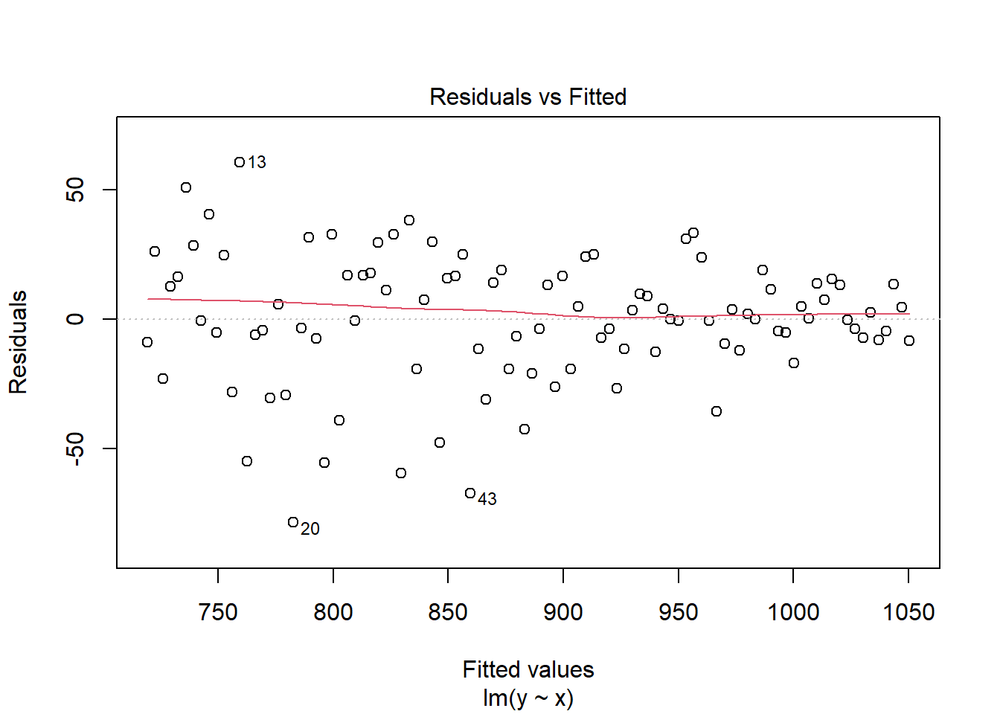
Selain itu, heteroskedastisitas juga terlihat di plot scale-location. Seharusnya garis merah di plot scale-location lurus dan titik-titik terdistribusi homogen. Walaupun ada dua amatan yang tak sesuai dengan pola tersebut, terlihat bahwa ada pola menurun di plot tersebut saat x membesar. Jika kembali ke contoh data dengan ragam tak sama sebelumnya:
Code
plot(mod,which=3)
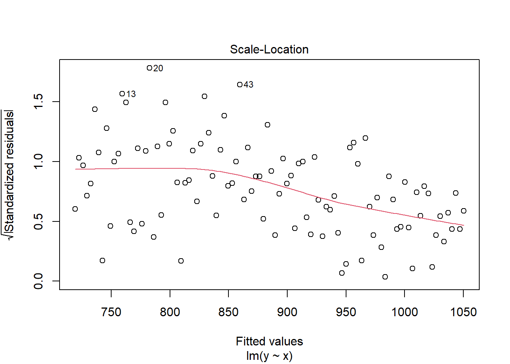
Pola menurun tersebut juga terlihat. Plot terakhir yang dapat digunakan untuk mendiagnosis ragam tak seragam adalah plot residual vs level faktor:
Code
plot(aovRAKL,which=5) #plot ke-5
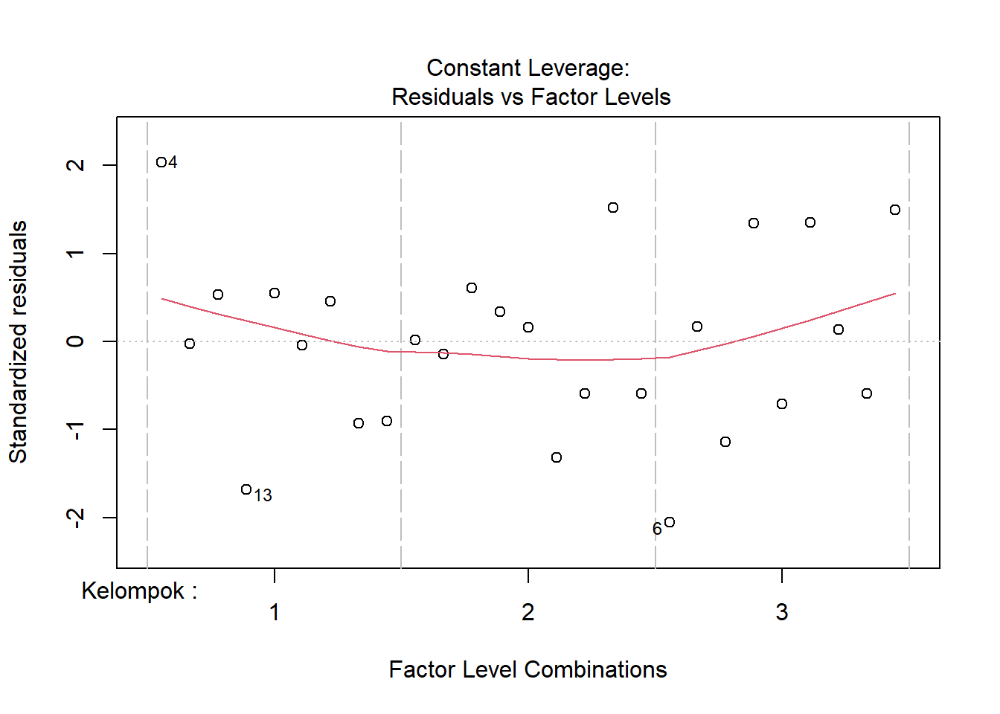
Plot ini menunjukkan sebaran residual per kelompok, sedangkan sebaran residual per perlakuan dapat dilihat di:
Code
aovRAKL2<-aov(Produksi~Perlakuan+Kelompok,data=DataRAKL) #ubah urutan anova. peubah pertama setelah y~ akan menjadi level faktor di plot iniplot(aovRAKL2,which=5)
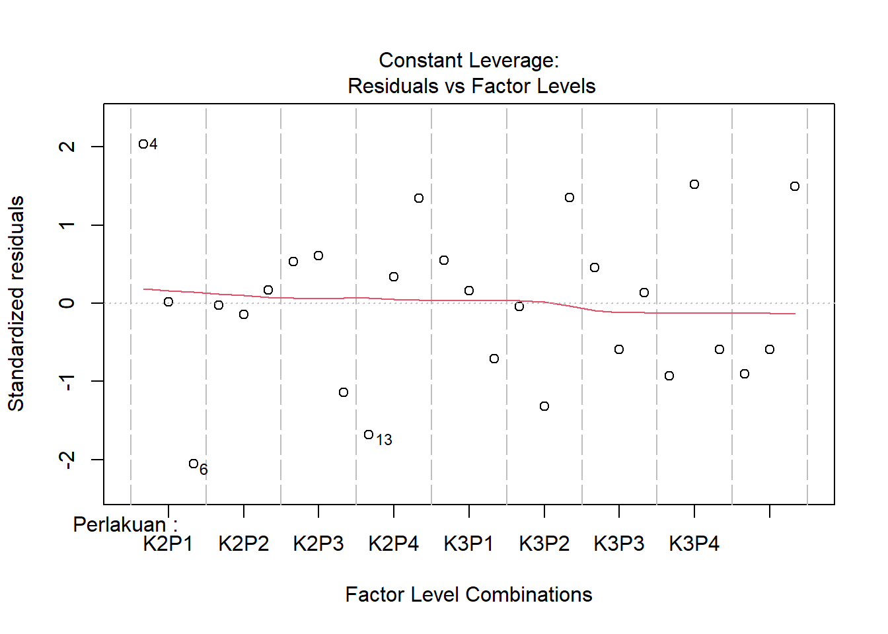
Ketidakhomogenan ragam tidak terlihat di kedua plot ini.
Buat plot residual vs fitted terlebih dahulu. Pertama, buat data frame dengan nilai-nilai yang diinginkan:
Code
temp_data = pd.DataFrame(dict(fitted_values=RAKL_lm.fittedvalues, residual=RAKL_lm.resid))#ambil fitted values dan residual dengan hasilANOVA.fittedvalues/resid
Buat plot dari data tersebut. Buat argumen lowess=True agar garis merah terlihat seperti di R:
Code
graph = sns.lmplot(x='fitted_values', y='residual', data=temp_data, lowess=True, line_kws={'color':'red'}) #lowess=garis, line_kws=setting garis lowess, dalam kasus ini warnaplt.show()
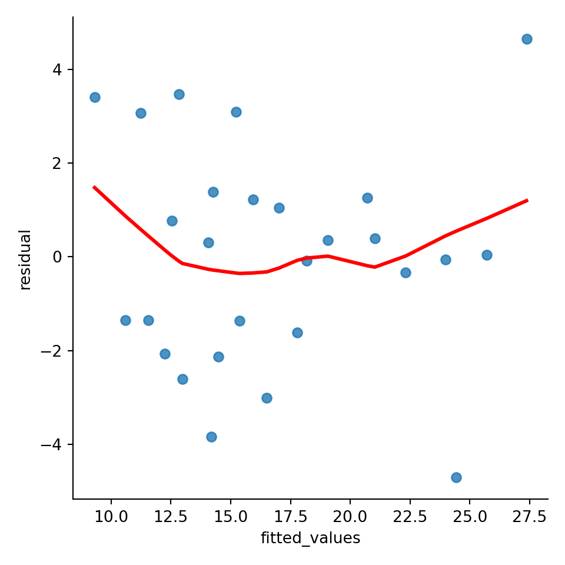
Pola corong terbalik juga terlihat di plot ini. Lalu, untuk membuat plot scale-location di python, ambil studentized residual dari model terebut dulu:
Khalayak yang berbeda dapat memberikan tafsiran berbeda untuk tiap plot, khususnya jika ketidakhomogenan ragam tidak seekstrim di contoh sebelumnya. Pola-pola tertentu belum tentu terlihat, khususnya jika audiens kurang teliti. Oleh karena itu, perlu uji formal untuk kehomogenan ragam. Semua uji yang akan diperlihatkan memiliki hipotesis:
\[
\begin{aligned}
H_{0}&:\sigma_{1}^2=\sigma_{2}^2=...=\sigma_{t}^2=\sigma^2 \text{ (ragam homogen)}\\
H_{1}&:\text{ Setidaknya satu }\sigma_{i}^2\neq\sigma^2 \text{ (ragam tak homogen)}
\end{aligned}
\]
4.2.2.1 Uji yang didasari asumsi normalitas: Bartlett dan Hartley
Dengan \(S_{i}^2\) adalah ragam sampel perlakuan atau kelompok ke-i, N jumlah total unit percobaan. Arti dari rumus tersebut adalah upaya membandingkan penduga ragam jika homogen \(S_{p}^2\) dengan jumlah ragam sebenarnya. Jika ragam homogen, statistik q akan mendekati nol. Jika heterogen, statistik q akan besar sehingga \(H_{0}\) akan ditolak jika \(\chi_{0}^2>\chi_{\alpha;t-1}^2\)
Atau rasio antara ragam maksimum dan ragam minimum. Uji ini mengharuskan jumlah ulangan sama. Penduga ragam menyebar chi-kuadrat jika peubah acak tersebut menyebar normal1. Jika jumlah ulangan sama di suatu perlakuan atau kelompok, maka derajat bebas tiap penduga ragam sama. Pembagian dua peubah chi-kuadrat dengan derajat bebasnya menghasilkan peubah yang menyebar F. Karena jumlah ulangan sama, angka tersebut saling terbagi.
Jika ada beberapa perlakuan yang digunakan, atau beberapa kelompok, dapat dilakukan uji untuk tiap perlakuan tersebut. Implementasi uji tersebut di R sebagai berikut:
Code
bartlett.test(Produksi ~ Perlakuan, data = DataRAKL) #uji kehomogenan ragam di tiap perlakuan
Bartlett test of homogeneity of variances
data: Produksi by Perlakuan
Bartlett's K-squared = 5.7463, df = 8, p-value = 0.6756
Code
bartlett.test(Produksi ~ Kelompok, data = DataRAKL) #uji kehomogenan ragam di tiap kelompok
Bartlett test of homogeneity of variances
data: Produksi by Kelompok
Bartlett's K-squared = 2.5611, df = 2, p-value = 0.2779
Hartley's maximum F-ratio test of homogeneity of variances
data: Produksi by Perlakuan
F Max = 22.226, df = 2, k = 9, p-value = 0.6461
Code
hartleyTest(Produksi~Kelompok,data=DataRAKL)
Hartley's maximum F-ratio test of homogeneity of variances
data: Produksi by Kelompok
F Max = 3.1755, df = 8, k = 3, p-value = 0.2647
Kedua uji tersebut tidak menolak \(H_{0}\) di \(\alpha=5\%\). Oleh karena itu, kesimpulan dari dua uji tersebut adalah bahwa ragam homogen. Implementasi uji Bartlett di python menggunakan scipy sebagai berikut:
Code
from scipy.stats import bartlettkel1 = RAKLpy.query('Kelompok == 1')['Produksi'] #ambil nilai peubah respon di tiap kelompokkel2 = RAKLpy.query('Kelompok == 2')['Produksi'] #sintaks: dataframe.query('kondisi')['peubah']kel3 = RAKLpy.query('Kelompok == 3')['Produksi']stat, p = bartlett(kel1, kel2, kel3) #lakukan ujiprint("Statistik uji:", stat, "| P-value:", p) #print hasil uji
Statistik uji: 2.5610747969217615 | P-value: 0.27788792377685606
Implementasi ini cukup membosankan karena harus mengambil data tiap kelompok secara manual. Implementasi menggunakan pingouin tidak memerlukan hal tersebut. Implementasi ini lebih baik jika ada banyak kelompok. Misal, ada tujuh perlakuan berbeda. Pengambilan data untuk tiap perlakuan akan membosankan. Karena itu, gunakan pingouin:
Kesimpulan uji menggunakan R ataupun python sama. Ragam homogen.
4.2.3 Uji Levene dan Brown-Forsythe
Uji Bartlett dan Hartley bergantung pada asumsi normalitas. Jika sebaran galat tidak normal, misal menyebar Student-t atau chi-kuadrat, uji tersebut akan cenderung mengambil keputusan yang salah. Uji tersebut dapat secara empiris memiliki \(\alpha\) yang lebih tinggi dari yang diinginkan dan memiliki kuasa uji lebih rendah dari alternatif yang tidak mengasumsikan normalitas.
Alternatif uji yang tidak mengasumsikan normalitas adalah uji Levene, dengan statistik uji:
Uji Levene menghasilkan sekeluarga uji dengan statistik uji yang mirip, hanya dibedakan oleh pilihan \(Z_{ij}\). Uji Levene menggunakan rata-rata perlakuan ke-i \(\bar{Y}_{i.}\), sedangkan ada juga uji yang menggunakan rata-rata terpangkas \(10\%\)\(\hat{Y}_{i.}\). Uji Brown-Forsythe menggunakan median \(\bar{Y}_{i.}^{'}\). Jika disimpulkan:
Brown dan Forsythe (1974) membandingkan kuasa uji dan \(\alpha\) empiris beberapa uji homogenitas ragam di berbagai situasi dengan simulasi. Keluarga uji Levene memiliki kuasa uji lebih rendah jika data berdistribusi normal, tetapi di distribusi Student-t dan chi-kuadrat kuasa uji Levene lebih tinggi. Uji Levene tidak kekar pada data dengan penjuluran ekstrim karena memiliki tingkat kesalahan jenis I (tolak \(H_{0}\) jika \(H_{0}\) benar) lebih tinggi secara empiris daripada yang dispesifikasi peneliti. Uji Brown-Forsythe sangat konservatif, bahkan dengan tingkat kesalahan jenis I (\(\alpha\)) empiris lebih rendah dari yang dispesifikasi. Uji Levene dengan mean terpangkas memiliki \(\alpha\) empiris paling dekat dengan yang diinginkan. Penemuan ini direplikasi di penelitian lainnya dan disimpulkan di Conover et al. (2018).
Oleh karena itu, dalam menentukan uji paling tepat untuk kehomogenan ragam, perlu diteliti sebaran dari sisaan. Jika sebaran normal, uji Bartlett ataupun Hartley paling baik. Jika sebaran tidak normal tetapi tidak menjulur ekstrim, uji Levene memilik kuasa uji paling tinggi daripada uji lainnya. Jika sebaran menjulur ekstrim, uji Levene dengan mean terpangkas atau uji Brown-Forsythe paling kekar.
Implementasi uji tersebut di R adalah sebagai berikut:
Code
library(car)
Loading required package: carData
Code
leveneTest(Produksi~Perlakuan, data=DataRAKL, center = median) #default (Brown Forsythe)
Levene's Test for Homogeneity of Variance (center = median)
Df F value Pr(>F)
group 8 0.5855 0.7771
18
Code
leveneTest(Produksi~Kelompok, data=DataRAKL, center = mean) # Levene (mean)
Levene's Test for Homogeneity of Variance (center = mean)
Df F value Pr(>F)
group 2 0.8113 0.4561
24
Code
leveneTest(Produksi~Perlakuan, data=DataRAKL, center = mean,trim=0.1) # Levene (trimmed)
Levene's Test for Homogeneity of Variance (center = mean: 0.1)
Df F value Pr(>F)
group 8 1.0536 0.4351
18
Karena p-value lebih dari \(\alpha=5\%\), ragam dapat dianggap homogen untuk kelompok dan perlakuan di taraf tersebut. Sedangkan implementasi uji tersebut di Python:
Sayangnya, hanya dapat dilakukan uji Brown-Forsythe (atau, uji Levene menggunakan median). Walaupun implementasi pingouin lebih sederhana, metode ini kurang fleksibel.
4.2.4 Plot vs. uji
Terlihat bahwa hasil uji formal menyimpulkan bahwa ragam sama, sedangkan plot residual vs. fitted dan scale-location menunjukkan pola heteroskedastis. Mungkin, amatan 6 dan 14 berpengaruh. Coba hilangkan amatan tersebut:
Code
DataRAKL_tanpaoutlier<-DataRAKL[c(-6,-14),]bartlett.test(Produksi ~ Perlakuan, data = DataRAKL_tanpaoutlier) #uji kehomogenan ragam di tiap perlakuan
Bartlett test of homogeneity of variances
data: Produksi by Perlakuan
Bartlett's K-squared = 2.5855, df = 8, p-value = 0.9576
Code
bartlett.test(Produksi ~ Kelompok, data = DataRAKL_tanpaoutlier) #uji kehomogenan ragam di tiap kelompok
Bartlett test of homogeneity of variances
data: Produksi by Kelompok
Bartlett's K-squared = 2.4855, df = 2, p-value = 0.2886
Code
leveneTest(Produksi ~ Perlakuan, data = DataRAKL_tanpaoutlier) #uji kehomogenan ragam di tiap perlakuan
Levene's Test for Homogeneity of Variance (center = median)
Df F value Pr(>F)
group 8 0.3319 0.941
16
Code
leveneTest(Produksi ~ Kelompok, data = DataRAKL_tanpaoutlier) #uji kehomogenan ragam di tiap kelompok
Levene's Test for Homogeneity of Variance (center = median)
Df F value Pr(>F)
group 2 0.8511 0.4405
22
Uji formal masih menandakan ragam sama. Lalu, bagaimana cara hasil plot residual vs fitted dijelaskan?
Pertama, plot residual per kelompok dan perlakuan relatif sama. Karena uji hanya dapat dilakukan kepada kelompok atau perlakuan, bukan kombinasinya, hasil ini sesuai dengan plot tersebut. Kedua, pola tersebut mungkin muncul karena observasi sedikit di fitted values yang besar sehingga terlihat berpola padahal tidak. Ketiga, pola tersebut mungkin muncul karena interaksi antara kelompok dan perlakuan yang menurut uji Tukey ada. Oleh karena itu, uji yang terpisah di perlakuan atau kelompok tidak dapat mendeteksi hal tersebut, tapi uji yang melihat kombinasi residual dapat mendeteksi hal tersbut. Mungkin dapat dibandingkan dengan uji Bresuch-Pagan (yang menjadi uji standar heteroskedastisitas di regresi):
Code
library(lmtest)
Loading required package: zoo
Attaching package: 'zoo'
The following objects are masked from 'package:base':
as.Date, as.Date.numeric
Code
bptest(Produksi~Perlakuan+Kelompok,data=DataRAKL)
studentized Breusch-Pagan test
data: Produksi ~ Perlakuan + Kelompok
BP = 13.784, df = 10, p-value = 0.1831
Walaupun masih taktolak \(H_{0}\), hasil uji Breusch-Pagan memiliki p-value lebih rendah dari uji lain. Oleh karena itu, aman untuk mengasumsikan ragam homogen di kasus ini. Selain itu karena jumlah ulangan sama, heterogenitas ragam tak berpengaruh besar, sesuai diskusi sebelumnya.
4.3 Galat percobaan saling bebas
Kebebasan galat merupakan asumsi yang paling penting dari ANOVA dan juga yang paling sulit diatasi ketika asumsi tersebut tidak terpenuhi. Asumsi ragam galat konstan merupakan asumsi yang terpenting kedua untuk dipenuhi setelah asumsi kebebasan galat. Akibat dari ragam galat yang tidak konstan akan mempengaruhi kesimpulan yang kita peroleh. Namun, ragam galat yang tidak konstan dapat diatasi pada banyak situasi, misal menggunakan transformasi.
\[
y_{ij} = \mu+\tau_{i}+\varepsilon_{ij}
\]
Pada model linier yang kita gunakan pada persamaan di atas, asumsi kenormalan menjadi tidak begitu penting untuk dipenuhi, terutama jika ukuran contoh yang diperoleh besar dan Teorema Limit Pusat dapat dipakai. Namun terdapat model-model tertentu yang sangat bergantung pada normalitas (Nur Hilal A. Syahrir, Statistika Terapan IPB).
Autokorelasi muncul ketika hasil pada amatan yang berdekatan cenderung terlalu mirip (korelasi positif) atau terlalu berbeda (korelasi negatif). Autokorelasi seringkali menjadi penyebab ketidakbebasan pada galat. Alasan amatan tidak saling bebas adalah:
Pengukuran berulang dilakukan ke subjek yang sama
Amatan berkorelasi dalam waktu
Amatan berkorelasi dalam tempat
Pengaturan sistematis dari unit percobaan
Contoh pengukuran berulang dan amatan yang berkorelasi dalam waktu adalah jika tiga pohon dengan varietas berbeda diamati tingginya. Misal, tiga pohon tersebut diamati tingginya setelah satu, dua, dan tiga tahun. Jika amatan di varietas ke-i di tahun ke-j menjadi baris di data, amatan-amatan tersebut akan tidak bebas, melainkan berkorelasi dengan waktu. Oleh karena itu, amtatan tiap tahun harus dibuat kolom sendiri agar tiap baris (pohon) saling bebas. Namun, jika hanya diamati satu pohon untuk tiap varietas, tidak akan ada derajat bebas bagi ANOVA. Kasus ini menunjukkan salah satu kendala yang muncul saat penanganan amatan tak bebas.
Jika peneliti tersebut menyadari dari awal bahwa amatan suatu pohon di tahun berbeda tidak saling bebas, seharusnya peneliti menyiapkan beberapa pohon dari satu varietas. Jika ada pengaturan tersebut, derajat bebas cukup untuk melakukan ANOVA.
Contoh dari amatan yang berkorelasi dalam tempat adalah perlakuan A yang ditaruh di lereng suatu bukit dan perlakuan lainnya ditaruh di puncak bukit. Oleh karena berada di tempat geografis yang sama, amatan perlakuan A tidak saling bebas satu sama lain.
Pengaturan sistematis muncul ketika pengacakan tidak dilakukan dengan benar. Akan muncul pola dari urutan unit percobaan.
Sebelum melakukan eksplorasi ataupun uji, pastikan urutan dari amatan masuk akal. Dalam studi kasus ini, dianggap urutan amatan dari DataRAKL sesuai dengan suatu urutan waktu. Misal, baris 1 diamati sebelum baris 2, dan seterusnya. Jika urutan tidak memiliki arti, maka data dapat dengan mudah diubah urutannya agar tidak berkorelasi satu sama lain, seperti di [contoh ini] (https://stats.stackexchange.com/questions/326305/i-ran-the-durbinwatsontest-in-r-and-got-p-value-0-for-non-time-series-data-is).
4.3.1 Prosedur Eksploratif
4.3.1.1 Plot residual vs order
Memeriksa adanya autokorelasi secara eksploratif dilakukan dengan melihat plot antara sisaan dengan urutan waktu (plot of residuals in time sequence). Akan diteliti tren dari plot tersebut - menyebar secara acak atau tidak berpola apapun. Dapat juga melihat pola plot of residual versus order, khususnya apakah plot tersebut stasioner. Implementasi plotting tersebut di R adalah:
Code
resi <-residuals(object = aovRAKL) #ambil residual# Plot Sisaan vs Order plot(resi, type ='o'); abline(h =0, col ='red')
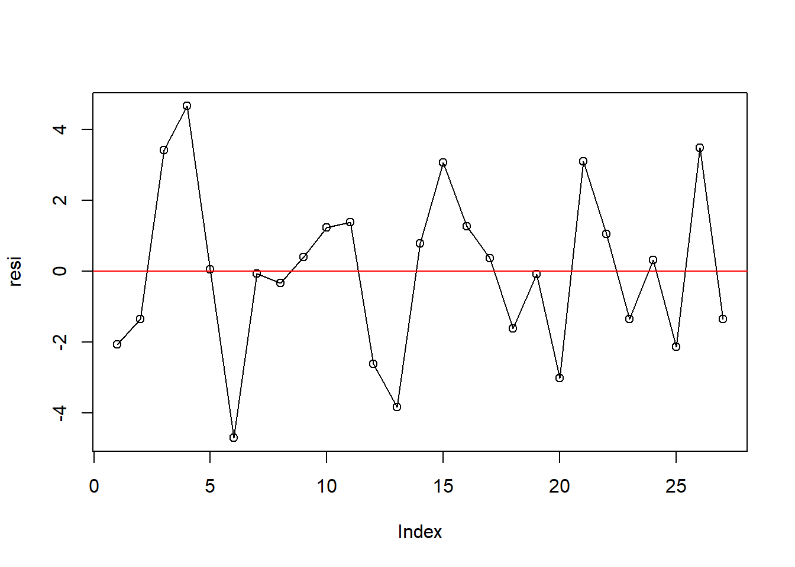
Dari gambar plot sisaan vs order (plot of residual versus order) terlihat membentuk trend yang datar atau hampir datar sehingga asumsi galat percobaan saling bebas terpenuhi. Namun, titik tersebar membangun pola melebar atau menyempit (bentuk terompet) sehingga data mempunyai pola yang tidak stasioner.
4.3.1.2 ACF dan PACF
Selain plot tersebut, dapat dilihat plot autokorelasi (ACF) dan plot autokorelasi parsial (PACF). Lag adalah beda urutan suatu sisaan dengan sisaan sebelumnya. Misal, lag 2 berarti tiap sisaan dibandingkan dengan sisaan dua observasi sebelumnya. Jika garis vertikal di tiap lag lebih tinggi dari garis biru horizontal, maka dianggap terjadi autokorelasi di lag tersebut.
Code
acf(resi)
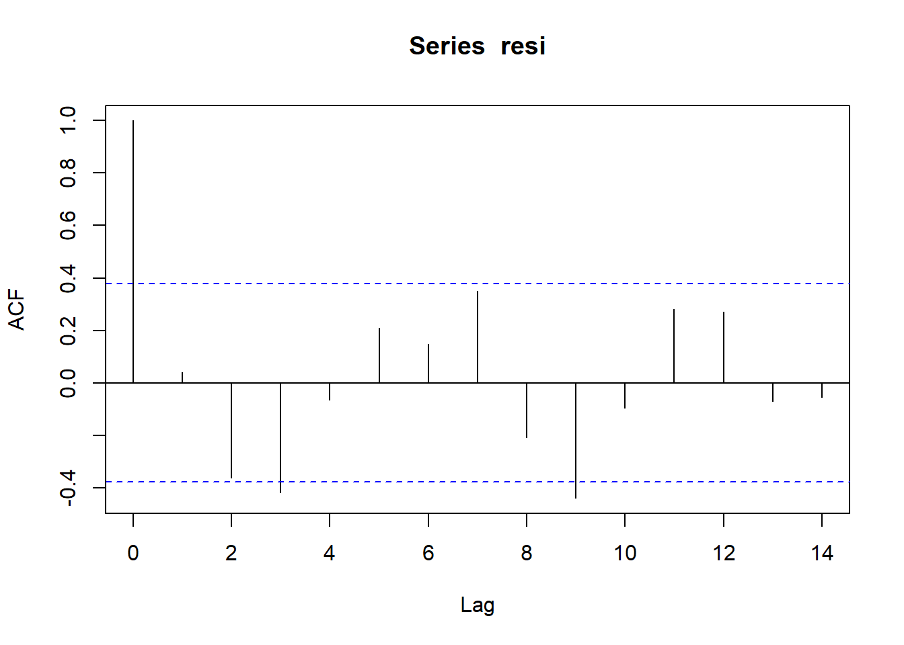
Plot korelasi parsial mengeluarkan pengaruh dari lag-lag lain. Aturan keputuasan dari plot tersebut sama dengan plot ACF:
Code
pacf(resi)
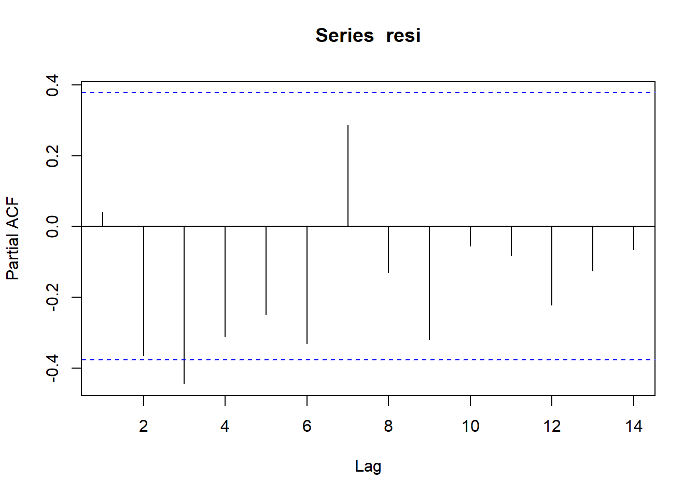
Lag nol di plot ACF dapat diabaikan karena korelasi antara observasi dengan dirinya sendiri pasti satu. Namun, terlihat bahwa di beberapa lag bukan nol garis vertikal melewati garis horizontal sehingga dapat disimpulkan bahwa galat tidak bebas.
4.3.2 Uji formal untuk galat percobaan saling bebas
Uji formal untuk menentukan kebebasan galat percobaan menggunakan Runs Test (Uji Runtunan) dan Uji Durbin Watson.
4.3.2.1 Uji Durbin-Watson
Uji formal yang sederhana yang biasa digunakan untuk mengecek autokorelasi adalah Uji Durbin Watson. Uji Durbin Watson hanya dapat menguji ketidakbebasan galat percobaan pada lag 1. Dalam uji tersebut, anggap bahwa sisaan ke-t adalah \(e_{t}=\rho e_{t-1}+v_{t}\), di mana \(v_{t}\) merupakan komponen sisaan yang memenuhi asumsi kebebasan dan kehomogenan. Oleh karena itu, hipotesis yang diuji adalah:
Interpretasi yang tepat dari nilai statistik uji Durbin-Watson, jika dilakukan secara manual, cukup sulit. Sebaran tepat statistik uji Durbin Watson bergantung pada matriks peubah bebas X sehingga tidak ada satu tabel yang mengandung nilai kritis statistik Durbin Watson. Jika tidak ada autokorelasi, DW berada di sekitar 2. Autokorelasi positif akan membuat DW kurang dari 2, dan jika terdapat autokorelasi negatif maka nilai DW akan lebih besar dari 2.
Sebagai perhitungan kasar, autokorelasi terjadi ketika DW berada di luar rentang 1,5 sampai 2,5. Nilai tersebut cukup besar dalam melihat efek yang nyata pada teknik inferensi. Perhatikan bahwa DW sendiri acak dan mungkin di luar jangkauan 1,5 sampai 2,5 bahkan jika residual tidak berkorelasi. Untuk kumpulan data dengan amatan yang panjang dari perlakuan yang sama, ragam dari DW kurang dari 4/N.
Namun, implementasi uji Durbin-Watson di berbagai software statistika, termasuk R, dapat diinterpretasikan dengan mudah karena software tersebut dapat menghitung sebaran statistik uji Durbin Watson secara eksak. Matriks peubah bebas X dapat menjadi input software dan p-value eksak dapat dikeluarkan oleh software tersebut. Uji Durbin-Watson dapat diimplentasikan melalui package lmtest atau car.
Code
library(lmtest)library(car)lmtest::dwtest(aovRAKL,alternative="two.sided", iter=15, tol=1e-10) #H1: rho tak sama dengan nol
Durbin-Watson test
data: aovRAKL
DW = 1.8764, p-value = 0.04881
alternative hypothesis: true autocorrelation is not 0
Code
#iter=iterasi algoritma pan, tol=toleransidwtest(aovRAKL,alternative="greater") #H1: rho lebih dari nol
Durbin-Watson test
data: aovRAKL
DW = 1.8764, p-value = 0.02441
alternative hypothesis: true autocorrelation is greater than 0
Code
dwtest(aovRAKL,alternative="less") #H1: rho kurang dari nol
Durbin-Watson test
data: aovRAKL
DW = 1.8764, p-value = 0.9756
alternative hypothesis: true autocorrelation is less than 0
Code
car::durbinWatsonTest(aovRAKL)
lag Autocorrelation D-W Statistic p-value
1 0.04019671 1.876365 0.034
Alternative hypothesis: rho != 0
Lebih direkomendasikan menggunakan package lmtest karena p-value package lmtest lebih stabil. Ini terjadi karena algoritma “pan” yang digunakan package tersebut untuk mengatur p-value. Pada dasarnya, algoritma tersebut memastikan p-value konvergen (menuju ke) suatu nilai sehingga tidak berubah-ubah. Seperti dilihat di kode, toleransi telah di-set sehingga perubahan p-value dari satu iterasi ke iterasi selanjutnya lebih sedikit dari toleransi yang diinginkan. Dapat disimulasikan sebagai berikut:
Code
carRes<-rep(0,10)lmtestRes<-rep(0,10)for (i inseq(1,10)){ carRes[i]<-car::durbinWatsonTest(aovRAKL)$p lmtestRes[i]<-lmtest::dwtest(aovRAKL,alternative="two.sided")$p}knitr::kable(data.frame(car=carRes,lmtest=lmtestRes))
car
lmtest
0.058
0.0488117
0.052
0.0488117
0.046
0.0488117
0.036
0.0488117
0.054
0.0488117
0.040
0.0488117
0.054
0.0488117
0.050
0.0488117
0.046
0.0488117
0.038
0.0488117
Code
mean(carRes)
[1] 0.0474
Seperti yang dapat dilihat, p-value dari library car sangat tidak stabil, sehingga mungkin saja keputusan uji berubah-ubah. Gunakan lmtest saja. Implementasi di python sebagai berikut:
Code
from statsmodels.stats.stattools import durbin_watson#perform Durbin-Watson testdurbin_watson(RAKL_lm.resid)
1.8763649943450147
Implementasi dari statsmodels tidak dapat memberikan p-value. Oleh karena itu, implementasi dari dwtest, dengan sintaks mirip lmtest dapat menjadi alternatif:
Code
from dwtest import dwtestdw,pval=dwtest(formula='Produksi~Perlakuan+Kelompok',data=RAKLpy,alternative="two_sided",iterations=15,tol=1e-10)print("p-value:",pval,"| DW:",dw)
Namun, sepertinya implementasi dwtest menghitung nilai statistik uji DW dengan kurang tepat - statistik uji tersebut sedikit berbeda dari keluaran statsmodels atau R. Dari keluaran di atas dapat dilihat bahwa pada uji Durbin Watson ini memiliki nilai p-value \(< \alpha = 0.05\) maka Tolak \(H_{0}\), artinya cukup bukti untuk mengatakan bahwa ada autokorelasi. Oleh karena itu, karena autokorelasi seringkali menjadi penyebab ketidakbebasan pada galat maka asumsi galat percobaan saling bebas belum terpenuhi.
Uji Durbin-Watson memiliki beberapa kelemahan:
Seperti yang dijelaskan sebelumnya, uji tersebut mengasumsikan autokorelasi pada lag 1 saja.
Uji tidak dapat digunakan dalam model autoregresif (memiliki peubah tak bebas dari periode sebelumnya)
Uji sensitif terhadap asumsi normalitas.
4.3.2.2 Runs test
Oleh karena itu, dapat digunakan Runs test. Misal ada 15 data, maka jika nilai data naik dari nilai sebelumnya dinotasikan positif (+), dan sebaliknya dinotasikan negatif (-). Jika proses tersebut menghasilkan + + + + − − − + + + − − + + +, ada 5 run, 3 positif dan 2 negatif. Sebuah run merupakan kumpulan tanda positif atau negatif. Jumlah run tersebut menjadi statistik uji runs test, dengan implementasi di R berupa:
Code
# Run Test# H0 (null): The data was produced in a random manner.# Ha (alternative): The data was not produced in a random manner.library(snpar)
Attaching package: 'snpar'
The following object is masked from 'package:tseries':
runs.test
Nilai p dari pengujian ini adalah 0.6951. Karena p-value lebih dari taraf nyata 0.05, maka tak tolak hipotesis nol. Hal ini menunjukkan belum cukup bukti untuk mengatakan bahwa data dihasilkan secara tidak acak.
4.3.2.3 Autokorelasi dengan lag lebih dari 1: Breusch-Godfrey dan modifikasi Durbin-Watson
Seperti dijelaskan sebelumnya, uji Durbin Watson hanya dapat menguji autokorelasi lag 1. Namun, terlihat di plot ACF dan PACF bahwa autokorelasi muncul di lag 2 dan 4. Alternatif sederhana untuk menguji hal tersebut adalah menambah order di fungsi uji Durbin Watson car:
Code
durbinWatsonTest(aovRAKL,max.lag=2)
lag Autocorrelation D-W Statistic p-value
1 0.04019671 1.876365 0.044
2 -0.36296687 2.584265 0.276
Alternative hypothesis: rho[lag] != 0
Atau, dapat digunakan uji Breusch-Godfrey. Pada dasarnya, dilakukan regresi residual dengan peubah bebas dan residual lag sebelumnya, lalu dihitung \(R^2\). Secara asimptotik, \(nR^2\sim\chi^2_{p}\). Implementasi uji tersebut di R:
Code
bgtest(aovRAKL,order=1)
Breusch-Godfrey test for serial correlation of order up to 1
data: aovRAKL
LM test = 0.084631, df = 1, p-value = 0.7711
Code
bgtest(aovRAKL,order=2)
Breusch-Godfrey test for serial correlation of order up to 2
data: aovRAKL
LM test = 7.5086, df = 2, p-value = 0.02342
Code
bgtest(aovRAKL,order=4)
Breusch-Godfrey test for serial correlation of order up to 4
data: aovRAKL
LM test = 17.379, df = 4, p-value = 0.001631
Uji tersebut tak menolak \(H_{0}\) di lag 1, tapi di lag selanjutnya uji tersebut menolak \(H_{0}\). Implementasi di Python:
Code
from statsmodels.stats.diagnostic import acorr_breusch_godfreybgstat,pbg,fstat,pf=acorr_breusch_godfrey(RAKL_lm,nlags=2)print("Statistik uji:", bgstat, "| P-value:", pbg)
Statistik uji: 7.508563644839594 | P-value: 0.023417262324381103
Diskusi mengenai kuasa uji autokorelasi dilakukan di Ulyanto (2020).
4.3.3 Konsekuensi dari ketidakbebasan pada galat
Ragam dari rataan contoh bukan lagi (\(\frac{\sigma^2}{n}\)) pada data yang tidak saling bebas
Ketika galat tidak saling bebas tapi sebaliknya memenuhi asumsi, maka dugaan dari pengaruh perlakuan yang kita peroleh masih tak bias, dan KTG mendekati tak bias untuk menduga \(\sigma^2\) ketika ukuran contah besar. Perbedaannya ialah ragam dari rataan tidak lagi \(\sigma^2\) dibagi dengan ukuran sampel (\(\frac{\sigma^2}{n}\)). Ini berarti bahwa dugaan standar error untuk rataan perlakuan dan perbandingan perlakuan adalah dugaan yang bias, (apakah penyimpangannya terlalu besar atau kecil tergantung pada pola ketidaksalingbebasan pada galat), sehingga selang kepercayaan dan uji anova tidak akan memiliki laju kesalahan yang dibutuhkan. Uji-F pada ANOVA akan dipengaruhi oleh alasan yang sama.
Uji-F pada ANOVA kekar terhadap ketidakbebasan
Uji-F pada ANOVA kekar terhadap ketidakbebasan jika dipertimbangkan sebagai uji pengacakan. Artinya bahwa rataan di semua pengacakan yang mungkin, uji-F akan menolak hipotesis nol ketika hipotesis nol benar.Masalah yang lebih berat dapat muncul ketika tidak ada pengacakan pada suluruh ketidakbebasan. Misalnya, perlakuan mungkin diterapkan untuk unit-unit pada pengacakan. Tapi ketika respon-respon peralakuan diukur, diikuti oleh semua perlakuan dua unit, dan seterusnya. Penerapan pengacakan dari perlakuan untuk unit-unit tidak akan membantu, jika terdapat korelasi yang kuat pada pengukuran galat.
4.4 Aditivitas
Rancangan-rancangan seperti RAKL dan RBSL mengasumsikan bahwa pengaruh perlakuan dan kelompok aditif - pengaruh tersebut tetap sama di semua kombinasi perlakuan dan kelompok. Sifat tersebut terlihat dari model linear untuk RAKL:
Terlihat bahwa tidak ada interaksi \((\tau_{i}\beta_{j})\) antara perlakuan dan kelompok. Dalam kata lain, efek suatu kelompok dianggap sama di semua perlakuan. Jika asumsi tersebut tidak terpenuhi, dapat terlihat bahwa:
Akan menjadi komponen galat. Ini berarti galat akan heterogen tergantung besaran interaksi di kelompok dan perlakuan tertentu, sehingga ragam galat tidak terduga dengan benar. Oleh karena uji-F menggunakan penduga ragam galat, hasil-hasil uji dapat misleading. Ada beberapa cari menguji asumsi ini.
4.4.1 Plot Interaksi
Plot interaksi sudah didiskusikan di Bab 2. Jika garis plot interaksi sejajar, asumsi keaditifan dianggap terpenuhi. Jika plot interaksi tidak sejajar, ada bukti untuk menduga bahwa asumsi keaditifan tidak terpenuhi. Sebagai contoh, plot interaksi ini:
Menandakan bahwa mungkin ada interaksi antara perlakuan dan kelompok karena garis plot interaksi tidak sejajar.
4.4.2 Uji formal
Asumsi aditivitas juga dapat diuji secara formal. Ada beberapa uji aditivitas yang dapat digunakan, antara lain uji Tukey, uji Mandel, uji Johnson-Graybill, uji Tussel, dan uji LBI (locally best invariant). Akan diberikan sintaks untuk tiap uji tersebut. Uji Tukey dan uji Tussel akan dijelaskan secara singkat. Filosofi inti dari uji Tukey mirip dengan uji Mandel, sedangkan filosofi uji Johnson-Graybill, Tussel, dan LBI juga saling mirip. Oleh karena itu, hanya akan diberikan penjelasan singkat mengenai uji Tukey dan Tussel. Referensi tambahan mengenai uji aditivitas dapat dilihat di Simeckova et al. (2018)
4.4.2.1 Asumsi bentuk interaksi tertentu: uji Tukey
Jika kita menggunakan rancangan faktorial, di mana kombinasi perlakuan diulang sebanyakan \(r\) kali, uji-F untuk efek interaksi merupakan bagian dari ANOVA. Namun, derajat bebas galat di rancangan faktorial adalah \(ab(n-1)\), sedangkan \(n=1\) di RAKL - satu perlakuan hanya muncul sekali di tiap kelompok. Derajat bebas galat akan nol jika kita menggunakan cara tersebut.
Namun, Uji Tukey pada dasarnya hanya menambahkan satu parameter \(\theta\). Parameter tersebut hanya mengambil satu derajat bebas sehingga derajat bebas galat tidak menjadi nol. Akan dibandingkan model tanpa interaksi dengan model berbentuk:
Dalam kata lain, penduga interaksi dalam uji Tukey berbentuk \(\lambda_{ij}=\theta\bar{y}_{i.}\bar{y}_{.j}\) - perkalian antara rata-rata perlakuan ke-i dan rata-rata kelompok ke-j, serta suaut konstanta. Oleh karena itu, hipotesis uji Tukey adalah:
Note, \(db_{g}=(t-1)(r-1)-1\) karena derajat bebas galat RAKL biasa berupa \((t-1)(r-1)\), tertapi satu derajat bebas diambil \(\theta\). Untuk mengimplementasikan uji di R, data harus berbentuk matriks - dalam kata lain, tiap kelompok merupakan baris, dan tiap kolom merupakan perlakuan. Lalu, kolom kelompok harus tidak ada. Matriks hanya berisi data, dengan tiap baris menandakan kelompok dan kolom menandakan perlakuan.
library(additivityTests)tukey.test(Y,alpha=0.05) #alpha dapat dispesifikasi
Tukey test on 5% alpha-level:
Test statistic: 9.213
Critival value: 4.543
The additivity hypothesis was rejected.
Uji Tukey menolak \(H_{0}\), sehingga dapat disimpulkan \(\theta\neq0\) dan model tak aditif. Bandingkan dengan uji Mandel:
Code
mandel.test(Y,alpha=0.05)
Mandel test on 5% alpha-level:
Test statistic: 4.316
Critival value: 3.739
The additivity hypothesis was rejected.
Uji tersebut juga menolak \(H_{0}\).
4.4.2.2 Uji dari akar ciri: Tussel, LBI, Johnson-Graybill
Uji Tukey mengasumsikan bentuk interaksi tertentu. Namun, bisa saja bentuk interaksi antara kelompok dan perlakuan lebih kompleks dari yang diberikan uji Tukey. Dalam kasus ini, kuasa uji (probabilitas menolak \(H_{0}\) jika \(H_{1}\) benar) dari uji Tukey dan Mandel relatif lebih rendah.
Ketiga uji ini muncul dari mengkaji matriks residual \(R\), di mana elemen matriks tersebut adalah:
Lalu, matriks tersebut akan dikali dengan transposenya, \(RR^{T}\) dan akan dicari akar ciri matriks tersebut. Akar ciri diurutkan sehingga \(k_{1}\geq k_{2}\geq ... \geq k_{n}\). Lalu, tiap akar ciri dibagi dengan jumlah total akar ciri, sehingga \(\omega_{i}=k_{1}/\sum_{i=1}^n k_{i}\). Jika ada interaksi, beberapa \(\omega_{i}\) akan lebih besar dari yang lainnya. Statistik uji Johnson-Graybill merupakan akar ciri terstandarisasi terbesar \(\omega_{1}\). Statistik uji Tussel dan LBI mencari m jumlah akar ciri, di mana jumlah tersebut adalah \(min(r,t)-1\). Maka, dicari jumlah yang terkecil dari jumlah perlakuan atau jumlah kelompok. Angka tersebut dikurangi satu dan diambil m akar ciri sebanyak jumlah tersebut. LBI menambahkan akar ciri tersebut sedangkan Tussel mengalikan akar ciri. Johnson Graybill dan LBI menolak \(H_{0}\) jika statistik ujinya lebih besar dari nilai kritis. Uji Tussel menolak \(H_{0}\) jika statistik ujinya lebih kecil dari nilai kritis. Implementasi uji di R:
Code
johnson.graybill.test(Y)
Johnson and Graybill test on 5% alpha-level:
Test statistic: 0.7262
Critival value: 0.8799
The additivity hypothesis cannot be rejected.
Code
lbi.test(Y)
Locally Best Invariant test on 5% alpha-level:
Test statistic: 0.6024
Critival value: 0.7797
The additivity hypothesis cannot be rejected.
Code
tusell.test(Y)
Tusell test on 5% alpha-level:
Test statistic: 0.1988
Critival value: 0.1089
The additivity hypothesis cannot be rejected.
Dapat dilihat bahwa hasil uji Tukey dan Mandel berbeda dengan uji berdasarkan akar ciri. \(\alpha\) sama - dalam kata lain, probabilitas menolak \(H_{0}\) jika \(H_{0}\) benar sama. Namun, kuasa uji berbeda. Jika bentuk interaksi sederhana (\(\theta\tau_{i}\beta_{j}\)), uji Tukey dan Mandel memiliki kuasa lebih besar dari uji berdasarkan akar ciri. Namun, jika bentuk interaksi lebih kompleks, uji akar ciri memiliki kuasa lebih besar.
Dalam kasus ini, dapat dilihat skenario-skenario tertentu. Jika interaksi kompleks, seharusnya uji Tukey dan Mandel cendurung taktolak \(H_{0}\) (karena kuasa uji lebih rendah) dan uji akar ciri cenderung menolak \(H_{0}\). Jika interaksi sederhana, seharusnya uji Tukey dan Mandel cenderung tolak \(H_{0}\) (karena kuasa uji lebih tinggi) dan uji akar ciri cenderung taktolak \(H_{0}\). Jika tidak ada interaksi, \(\alpha\) sudah dibuat sama sehingga seharusnya tidak ada kecenderungan tertentu.
Kasus ini sepertinya sesuai dengan skenario interaksi sederhana. Oleh karena itu, hasil uji Tukey dan Mandel dapat lebih dipercaya. Selain itu, sudah ada plot interaksi yang memperkuat kepercayaan bahwa interaksi benar adanya.
Sebagai tambahan terakhir, implementasi uji Tukey di Python dapat dilihat di notebook Google Colab ini.
Dapat dilihat di buku Teori Statistika seperti Ramachandran dan Tsokos↩︎
Source Code
# Uji AsumsiProsedur ANOVA mengasumsikan beberapa hal mengenai struktur model dan struktur galat. Jika asumsi tersebut tidak terpenuhi, hasil dari ANOVA mungkin saja tidak valid. Oleh karena itu, pengujian asumsi sangat penting untuk diketahui.## Galat percobaaan menyebar normal### Prosedur EksploratifSecara eksploratif dalam mendeteksi kenormalan pada galat dapat menggunakan plot peluang normal (Normal probability (Q-Q) plot) dan histogram sisaan.Metode grafis plot peluang normal (Normal probability (Q-Q) plot) memiliki sumbu vertikal plot (nilai data yang berurut) dan sumbu horizontal plot (nilai peluang normal). Untuk mendeteksi normalitas pada residual, maka pada sumbu vertikal plot NPP merupakan residual yang terurut dan pada sumbu horizontal merupakan skor peluang normal yang terurut dari residual. Jika pada NPP diperoleh garis yang lurus atau mendekati/hampir lurus maka data residual tersebut menyebar normal. Garis tersebut tidak akan betul-betul lurus sempurna karena adanya keragaman contoh. Jika dibuat plot NPP untuk data tidak normal, plot akan cenderung melengkung, dan bentuk kelengkungan tersebut dapat menjadi informasi sejauh mana penyimpangan ketidaknormalannya.```{r warning=FALSE}library(googlesheets4)DataRAKL<-read_sheet("https://docs.google.com/spreadsheets/d/1uFi_Njharot8G8-DvHWPhNLLqJ72ym5EuuOqgeFA0hY/edit?usp=sharing")DataRAKL$Produksi<-as.numeric(DataRAKL$Produksi)#pastikan perlakuan dan kelompok berbentuk faktorDataRAKL$Kelompok<-as.factor(DataRAKL$Kelompok)DataRAKL$Perlakuan<-as.factor(DataRAKL$Perlakuan)aovRAKL<-aov(Produksi~Kelompok+Perlakuan,data=DataRAKL) #prosedur anovabroom::tidy(aovRAKL) |> knitr::kable()```Pertama, plot Q-Q:```{r}# Plot Peluang Normal (Q-Q)plot(aovRAKL, which =2)#atau#qqnorm(aovRAKL$residuals); qqline(aovRAKL$residuals, col ='red')```Lalu, histogram:```{r}# Histogram Sisaanhist(aovRAKL$residuals,breaks =10)#atau#library(rcompanion)plotNormalHistogram(aovRAKL$residuals, breaks =10)```Dari plot di atas dapat terlihat bahwa semua titik cenderung berada kira-kira di sekitar sepanjang garis diagonal tetapi ada satu titik tidak dekat dengan garis dan histogram membentuk seperti kurva sebaran normal sehingga asumsi galat percobaan menyebar normal terpenuhi. Metode qq-plot dan histogram residual di python sebagai berikut. Pertama, lakukan ANOVA:```{python}import pandas as pdimport numpy as npimport statsmodels.api as smfrom statsmodels.formula.api import olsimport seaborn as snsfrom matplotlib import pyplot as pltRAKLpy=pd.read_csv("https://docs.google.com/spreadsheets/d/e/2PACX-1vTi9yO_OJZ5pHMmPRlPqPxK9TydeVWI--rXAYfFfwj2v6ee-vUrQGYUGYb5zgguZ5mgu9IDhwB-dIwl/pub?gid=0&single=true&output=csv") #baca dataRAKL_lm= ols('Produksi ~ C(Perlakuan)+C(Kelompok)',data=RAKLpy).fit() #C=peubah kategoriktable = sm.stats.anova_lm(RAKL_lm, typ=2) # Type 2 ANOVA DataFrameprint(table)```Buat plot:```{python}import statsmodels.api as smimport matplotlib.pyplot as plt#create Q-Q plot with 45-degree line added to plotfig = sm.qqplot(RAKL_lm.resid, line='s')plt.show()```Dan untuk histogram:```{python}import seaborn as snsimport matplotlib.pyplot as pltplt.clf() #clear plot sebelumnyah=sns.histplot(RAKL_lm.resid,bins=10, kde=True)plt.show()```### Uji formal untuk galat percobaan menyebar normalsecara formal dapat menggunakan beberapa uji tertentu diantaranya adalah Uji Kolmogorov-Smirnov, Uji Shapiro-Wilk, Uji Lilliefors, Uji Jarque-Bera, Uji Anderson-Darling, dsb.Semua uji tersebut memiliki hipotesis:$$\begin{aligned}H_{0}&:\text{ Galat menyebar normal}\\H_{1}&:\text{ Galat tidak menyebar normal}\end{aligned}$$Uji Shapiro Wilk memiliki statistik uji sebagai berikut:$$W = \frac{\left[\sum^n_{i=1} a_i x_{(i)}\right]^2}{\sum^n_{i=1}(x_i – \bar{x})^2}$$$x_{(i)}$ adalah statistik tataan ke-i - angka terkecil ke-i dari sampel. $a_{i}$ berasal dari suatu rumus berisi mean dan matriks peragam $X$. Implementasi di R:```{r}shapiro.test(x = aovRAKL$residuals)```Dan implementasi python:```{python}from scipy.stats import shapiroresult = (shapiro(RAKL_lm.resid))print(f"S-W statistic: {result[0]}")print(f"p-value: {result[1]}")```Dari keluaran uji Shapiro-Wilk dapat dilihat nilai p-value = 0.8832 $> \alpha = 0.05$ maka tak tolak $H_{0}$, artinya tidak cukup bukti untuk mengatakan bahwa galat tidak menyebar normal sehingga asumsi galat percobaan menyebar normal terpenuhi.Uji Kolmogorov-Smirnov memiliki statistik uji:$$D_n = \sup_{x}|F_n(x) – F(x)|$$Atau, jarak terbesar antara fungsi kumulatif dari sampel dan fungsi kumulatif dari sebaran normal (dalam kasus menguji kenormalan). Fungsi kumulatif dapat disesuaikan untuk sebaran yang berbeda jika ingin menguji kesesuaian dengan sebaran lain. Visualisasi dari proses ini ditunjukkan di [dokumen ini](https://rpubs.com/mharris/KSplot).```{r}# Uji Kolmogorov-Smirnovks.test(aovRAKL$residuals,pnorm, mean(aovRAKL$residuals), sd(aovRAKL$residuals))```Dan di python:```{python}from scipy.stats import kstestimport numpy as npresult = kstest(RAKL_lm.resid, cdf="norm",args=(np.mean(RAKL_lm.resid),np.std(RAKL_lm.resid)))print(f"K-S statistic: {result[0]}")print(f"p-value: {result[1]}")```Dari keluaran diatas dapat dilihat nilai p-value = 0.964 (R) > alpha = 0.05 maka Tak Tolak $H_{0}$, artinya tidak cukup bukti untuk mengatakan bahwa galat tidak menyebar normal sehingga dengan uji Kolmogorov-Smirnov asumsi galat percobaan menyebar normal juga terpenuhi.Uji Lilliefors pada dasarnya merupakan modifikasi dari uji Kolmogorov Smirnov. Uji tersebut dapat dilakukan tanpa menspesifikasi mean dan simpangan baku dari sebaran normal yang hendak diuji, serta memberikan koreksi pada nilai Kolmogorov Smirnov. Implementasi di R:```{r}# Uji Lilliefors# Hipotesis: H0 : galat menyebar normal# H1 : galat tidak menyebar normallibrary(nortest)lillie.test(aovRAKL$residuals)``````{python}from statsmodels.stats.diagnostic import lillieforsD,p=lilliefors(RAKL_lm.resid,dist='norm',pvalmethod='table')print("Statistik uji: ",D)print("p-value: ",p)```Dari keluaran di atas dapat dilihat nilai p-value = 0.8199 $> /alpha = 0.05$ maka Tak Tolak $H_{0}$, artinya tidak cukup bukti untuk mengatakan bahwa galat tidak menyebar normal sehingga dengan uji Lilliefors asumsi galat percobaan menyebar normal juga terpenuhi.Uji Jarque-Bera membandingkan skewness dan kurtosis data dengan sebaran normal. Ini dapat dilihat dari statistik uji:$$JB = \frac{n}{6} \times \bigg(S^2 + \frac{(K-3)^2}{4} \bigg)$$n adalah jumlah sampel, S adalah skewness, dan K adalah kurtosis. Implementasi di R sebagai berikut:```{r message=FALSE}# Uji Jarque-Bera# Hipotesis: H0 : galat menyebar normal# H1 : galat tidak menyebar normallibrary(tseries)tseries::jarque.bera.test(aovRAKL$residuals)```Dan implementasi python:```{python}from scipy.stats import jarque_beraresult = (jarque_bera(RAKL_lm.resid))print("JB statistic:", result[0])print("p-value:", result[1])```Dari keluaran diatas dapat dilihat nilai p-value = 0.8551 > alpha = 0.05 maka Tak Tolak H0, artinya tidak cukup bukti untuk mengatakan bahwa galat tidak menyebar normal sehingga dengan uji Jarque-Bera asumsi galat percobaan menyebar normal juga terpenuhi.Uji Anderson-Darling merupakan modifikasi dari uji Kolmogorov Smirnov:$$A^2 = n \int_{-\infty}^{\infty} \bigg (F_n(x) – F(x) \bigg )^2 w(x) dF(x)$$Statistik uji tersebut masih merupakan beda antara fungsi kumulatif, tetapi beda yang terambil tidak hanya beda terbesar. Selain itu, ada pembobotan:$$w(x) = \bigg[F(x)(1-F(x))\bigg]^{-1}$$Sehingga bobot tersebut akan lebih besar di ujung sebaran. Implementasi di R sebagai berikut:```{r}# Uji Anderson-Darling# Hipotesis: H0 : galat menyebar normal# H1 : galat tidak menyebar normallibrary(nortest)ad.test(aovRAKL$residuals)```Sedangkan di python:```{python}from scipy.stats import andersonresult = (anderson(RAKL_lm.resid, dist='norm'))print("A-D statistic:", result[0])print("Critical values:", result[1])print("Significance levels:", result[2])```Dari keluaran diatas dapat dilihat nilai p-value = 0.7851 > $/alpha = 0.05$ maka Tak Tolak $H_{0}$, artinya tidak cukup bukti untuk mengatakan bahwa galat tidak menyebar normal sehingga dengan uji Anderson-Darling asumsi galat percobaan menyebar normal juga terpenuhi. Interpretasi output Python adalah dengan membandingkan statistik uji dengan nilai kritis di taraf tertentu. Misal, karena $0.2302<0.517$, $H_{0}$ tak ditolak di $\alpha=15\%$. Jika nilai statistik uji lebih besar dari nilai kritis, $H_{0}$ dapat ditolak.### Konsekuensi dari ketidaknormalan pada galat.1. Kemenjuluran mempengaruhi selang kepercayaanKemenjuluran digunakan untuk mengukur ketidaksimetrisan data dan kurtosis digunakan untuk mengukur panjang ekor pada data. Baik kemenjuluran dan kurtosis pada sebaran normal adalah 0. Sebaran dengan ekor yang lebih panjang ke kanan ialah sebaran yang menjulur positif, sedangkan sebaran dengan ekor yang lebih panjang ke kiri ialah sebaran yang menjulur negatif. Sebaran yang simetris seperti sebaran normal mempunyai nilai kemenjuluran sama dengan 0. Sebaran dengan ekor yang lebih panjang dari normal (lebih rawan memiliki pencilan) memiliki kurtosis positif, dan mereka dengan ekor lebih pendek dari normal (cenderung memiliki sedikit pencilan) memiliki kurtosis negatif.Kemenjuluran mempengaruhi selang kepercayaanKemenjuluran dan kurtosis pada data dapat mempengaruhi selang kepercayaan, akan tetapi kemenjuluran mempunyai efek yang lebih besar dibanding kurtosis. Ketika suata data menyebar normal, selang kepercayaan dua arah dari sebaran t- berada pada selang/cakupan yang benar, galat yang sama besar pada data yang tinggi dan rendah. Ketika data dari sebaran mempunyai nilai kemenjuluran sama dengan nol, maka selang kepercayaan pada uji dua arah juga masih berada di sekitar nilai/cakupan yang benar, tetapi galat cenderung ke satu sisi atau sisi yang lainnya, tidak sama besar secara merata pada data yang besar dan kecil. Selang kepercayaan pada uji satu arah untuk rataan bisa menjadi masalah yang serius. 2. Pencilan, kekekaran, dan resistensiSuatu pencilan dapat mempengaruhi rataan perlakuan juga KTG. Sehingga inferensi yang diperoleh jika memasukkan dan mengeluarkan pencilan akan berbeda. Hal ini mungkin berguna untuk membedakan untuk membedakan antara kekekaran (validitas) dan resistensi (untuk pencilan). Kekekaran pada validitas artinya bahwa prosedur tersebut memberikan kesimpulan yang masih mendekati benar, bahkan ketika beberapa asumsi kita (seperti normalitas) tidak terpenuhi. Jadi dapat dikatakan bahwa uji-F pada ANOVA masih kekar, karena nilai uji-F 5% menolak nol di sekitar 5% dari seluruh contoh ketika hipotesin nol benar, bahkan ketika data yang diperoleh agak tidak normal. Suatu prosedur dikatakan resisten jika satu atau beberapa nilai data individu tidak mengubah inferensi dari suatu data. Walaupun uji F kekar pada validitasnya, tetapi uji-F tidak resisten terhadap pencilan.## Kehomogenan ragamTerkadang, sisaan tidak konstan di nilai $\hat{y}$ yang berbeda (dalam kata lain, di taraf faktor berbeda-beda). Jika penurunan ANOVA yang diberikan di Montgomery (2017) diteliti, penurunan nilai harapan $KT_{G}$ sebagai penduga $\sigma^2$ memerlukan asumsi kehomogenan ragam. Oleh karena itu, jika asumsi tersebut tidak terpenuhi, penduga ragam yang dimiliki bukan penduga terbaik. Ini berarti penduga efek perlakuan, kelompok, dan lainnya belum tentu efisien (ragam belum tentu terkecil) dan hasil uji-F dapat salah. Namun, penduga tersebut masih tak bias karena ketidakbiasan muncul dari nilai harapan $e_{ij}$, dan sifat tersebut dipastikan MKT.Dalam rancangan percobaan dengan jumlah ulangan sama di semua perlakuan, uji-F tidak terlalu dipengaruhi ragam tak homogen. Namun, jika jumlah ulangan tidak sama atau jika ada ragam yang jauh lebih besar dari ragam lainnya, masalah tersebut lebih serius. Jika ragam besar muncul di perlakuan dengan ulangan sedikit, $\alpha$ aktual lebih besar dari yang diinginkan (sehingga lebih mungkin menolak $H_{0}$ jika $H_{0}$ benar). Jika ragam besar muncul di perlakuan dengan ulangan banyak $\alpha$ aktual lebih kecil dari yang diinginkan (peneliti tanpa sengaja memilih uji yang terlalu ketat). Jika model acak digunakan, inferensia mengenai ragam akan terganggu walaupun ulangan sama digunakan.[Blanca *et al.* (2017)](https://link.springer.com/article/10.3758/s13428-017-0918-2) mendiskusikan kekekaran uji-F di berbagai situasi. Sama seperti Montgomery, ragam tak sama tidak menganggu uji-F saat ulangan sama. Namun, uji-F terganggu jika jumlah ulangan tak sama saat rasio antara ragam perlakuan terkecil dan terbesar lebih dari 1.5.### Prosedur EksploratifProsedur eksploratif yang dapat dilakukan adalah plot residual vs. fitted dan plot scale-location. Plot ini dapat dilihat dengan menggunakan fungsi plot(hasilmodel). Fungsi tersebut sebenarnya mengeluarkan berbagai jenis plot, seperti plot kuantil-kuantil dari residual (yang akan berguna saat melihat normalitas dari residual). Implementasi plotting tersebut di R adalah:```{r}par(mfrow=c(1,2)) #layout: mfrow= 1 baris, 2 kolomplot(aovRAKL, which=c(1,3)) #plot 1 (residual-fitted) dan 3 (scale-location)```Perlu dilihat dua hal dari plot residual vs fited. Pertama, garis merah di plot tersebut seharusnya lurus di nol. Kedua, titik-titik di plot tersebut menyebar seragam, tidak membentuk pola tertentu. Terlihat bahwa garis merah melengkung di kedua ujung plot residual vs. fitted Selain itu, titik-titik tampak membentuk pola corong terbalik. Hal tersebut dapat terlihat dari data yang sengaja dibuat memiliki ragam tak homogen. Demonstrasi ini diadaptasi dari [Hanck *et al.* (2016)](https://www.econometrics-with-r.org/5-4-hah.html).```{r}set.seed(101) x <-rep(seq(1,100)) #vektor x dari 1-100e <-c()e[1:25] <-rnorm(25, sd =40)e[26:50] <-rnorm(25, sd =30)e[51:75] <-rnorm(25, sd =20)e[76:100] <-rnorm(25, sd =10)# vektor galat, saat x kecil, ragam galat dibuat besary <-720+3.3* x + emod <-lm(y ~ x)plot(mod,which=1) #plot model```Selain itu, heteroskedastisitas juga terlihat di plot scale-location. Seharusnya garis merah di plot scale-location lurus dan titik-titik terdistribusi homogen. Walaupun ada dua amatan yang tak sesuai dengan pola tersebut, terlihat bahwa ada pola menurun di plot tersebut saat x membesar. Jika kembali ke contoh data dengan ragam tak sama sebelumnya:```{r}plot(mod,which=3)```Pola menurun tersebut juga terlihat. Plot terakhir yang dapat digunakan untuk mendiagnosis ragam tak seragam adalah plot residual vs level faktor:```{r}plot(aovRAKL,which=5) #plot ke-5```Plot ini menunjukkan sebaran residual per kelompok, sedangkan sebaran residual per perlakuan dapat dilihat di:```{r}aovRAKL2<-aov(Produksi~Perlakuan+Kelompok,data=DataRAKL) #ubah urutan anova. peubah pertama setelah y~ akan menjadi level faktor di plot iniplot(aovRAKL2,which=5)```Ketidakhomogenan ragam tidak terlihat di kedua plot ini.Buat plot residual vs fitted terlebih dahulu. Pertama, buat data frame dengan nilai-nilai yang diinginkan:```{python}temp_data = pd.DataFrame(dict(fitted_values=RAKL_lm.fittedvalues, residual=RAKL_lm.resid))#ambil fitted values dan residual dengan hasilANOVA.fittedvalues/resid```Buat plot dari data tersebut. Buat argumen lowess=True agar garis merah terlihat seperti di R:```{python}graph = sns.lmplot(x='fitted_values', y='residual', data=temp_data, lowess=True, line_kws={'color':'red'}) #lowess=garis, line_kws=setting garis lowess, dalam kasus ini warnaplt.show()```Pola corong terbalik juga terlihat di plot ini. Lalu, untuk membuat plot scale-location di python, ambil *studentized residual* dari model terebut dulu:```{python}sqrt_std_residual = np.sqrt(np.abs(RAKL_lm.get_influence().resid_studentized_internal))#hasil_model.get_influence().resid_studendized_interal: ambil studentized residual#np.sqrt: akartemp_data_scaleloc = pd.DataFrame(dict(fitted_values=RAKL_lm.fittedvalues, sqrt_std_residual=sqrt_std_residual)) #masukkan dataFrame```Lalu, plot-kan:```{python}graph = sns.lmplot(x='fitted_values', y='sqrt_std_residual', data=temp_data_scaleloc, lowess=True, line_kws={'color':'red'})plt.show()```Pola menurun terlihat juga di plot ini.### Uji formal untuk kehomogenan ragamKhalayak yang berbeda dapat memberikan tafsiran berbeda untuk tiap plot, khususnya jika ketidakhomogenan ragam tidak seekstrim di contoh sebelumnya. Pola-pola tertentu belum tentu terlihat, khususnya jika audiens kurang teliti. Oleh karena itu, perlu uji formal untuk kehomogenan ragam. Semua uji yang akan diperlihatkan memiliki hipotesis:$$\begin{aligned}H_{0}&:\sigma_{1}^2=\sigma_{2}^2=...=\sigma_{t}^2=\sigma^2 \text{ (ragam homogen)}\\H_{1}&:\text{ Setidaknya satu }\sigma_{i}^2\neq\sigma^2 \text{ (ragam tak homogen)}\end{aligned}$$#### Uji yang didasari asumsi normalitas: Bartlett dan HartleyUji Bartlett memiliki statistik uji:$$\begin{aligned}\chi_{0}^2&=2.3026\frac{q}{c}\\q&=(N-t)\log_{10}S^2_p-\sum_{i=1}^t (r_{i}-1)\log_{10}S_{i}^2\\c&=1+\frac{1}{3(t-1)}\left[\sum_{i=1}^t (n_{i}-1)^{-1}-(N-a)^{-1}\right]\\S_{p}^2&=\frac{\sum_{i=1}^t(r_{i}-1)S_{i}^2}{N-t}\end{aligned}$$Dengan $S_{i}^2$ adalah ragam sampel perlakuan atau kelompok ke-i, N jumlah total unit percobaan. Arti dari rumus tersebut adalah upaya membandingkan penduga ragam jika homogen $S_{p}^2$ dengan jumlah ragam sebenarnya. Jika ragam homogen, statistik q akan mendekati nol. Jika heterogen, statistik q akan besar sehingga $H_{0}$ akan ditolak jika $\chi_{0}^2>\chi_{\alpha;t-1}^2$Sedangkan uji Hartley memiliki statistik uji:$$F_{max}=\frac{max_{i}[S_{i}^2]}{min_{i}[S_{i}^2]}$$Atau rasio antara ragam maksimum dan ragam minimum. Uji ini mengharuskan jumlah ulangan sama. Penduga ragam menyebar chi-kuadrat jika peubah acak tersebut menyebar normal^[Dapat dilihat di buku Teori Statistika seperti Ramachandran dan Tsokos]. Jika jumlah ulangan sama di suatu perlakuan atau kelompok, maka derajat bebas tiap penduga ragam sama. Pembagian dua peubah chi-kuadrat dengan derajat bebasnya menghasilkan peubah yang menyebar F. Karena jumlah ulangan sama, angka tersebut saling terbagi.Jika ada beberapa perlakuan yang digunakan, atau beberapa kelompok, dapat dilakukan uji untuk tiap perlakuan tersebut. Implementasi uji tersebut di R sebagai berikut:```{r}bartlett.test(Produksi ~ Perlakuan, data = DataRAKL) #uji kehomogenan ragam di tiap perlakuanbartlett.test(Produksi ~ Kelompok, data = DataRAKL) #uji kehomogenan ragam di tiap kelompok```Sedangkan uji Hartley:```{r}library(PMCMRplus)hartleyTest(Produksi~Perlakuan,data=DataRAKL)hartleyTest(Produksi~Kelompok,data=DataRAKL)```Kedua uji tersebut tidak menolak $H_{0}$ di $\alpha=5\%$. Oleh karena itu, kesimpulan dari dua uji tersebut adalah bahwa ragam homogen. Implementasi uji Bartlett di python menggunakan scipy sebagai berikut:```{python}from scipy.stats import bartlettkel1 = RAKLpy.query('Kelompok == 1')['Produksi'] #ambil nilai peubah respon di tiap kelompokkel2 = RAKLpy.query('Kelompok == 2')['Produksi'] #sintaks: dataframe.query('kondisi')['peubah']kel3 = RAKLpy.query('Kelompok == 3')['Produksi']stat, p = bartlett(kel1, kel2, kel3) #lakukan ujiprint("Statistik uji:", stat, "| P-value:", p) #print hasil uji```Implementasi ini cukup membosankan karena harus mengambil data tiap kelompok secara manual. Implementasi menggunakan pingouin tidak memerlukan hal tersebut. Implementasi ini lebih baik jika ada banyak kelompok. Misal, ada tujuh perlakuan berbeda. Pengambilan data untuk tiap perlakuan akan membosankan. Karena itu, gunakan pingouin:```{python}import pingouin as pgpg.homoscedasticity(RAKLpy, dv='Produksi', group='Perlakuan', method='bartlett') #(data, peubah respon (y), faktor, metode)```Kesimpulan uji menggunakan R ataupun python sama. Ragam homogen.### Uji Levene dan Brown-ForsytheUji Bartlett dan Hartley bergantung pada asumsi normalitas. Jika sebaran galat tidak normal, misal menyebar Student-t atau chi-kuadrat, uji tersebut akan cenderung mengambil keputusan yang salah. Uji tersebut dapat secara empiris memiliki $\alpha$ yang lebih tinggi dari yang diinginkan dan memiliki kuasa uji lebih rendah dari alternatif yang tidak mengasumsikan normalitas.Alternatif uji yang tidak mengasumsikan normalitas adalah uji Levene, dengan statistik uji:$$W=\frac{(N-t)}{(t-1)}\frac{\sum_{i=1}^t r_{i}\left(\bar{Z}_{i.}-\bar{Z}_{..}\right)^2}{\sum_{i=1}^t\sum_{j=1}^r\left(Z_{ij}-\bar{Z}_{i.}\right)}$$Uji Levene menghasilkan sekeluarga uji dengan statistik uji yang mirip, hanya dibedakan oleh pilihan $Z_{ij}$. Uji Levene menggunakan rata-rata perlakuan ke-i $\bar{Y}_{i.}$, sedangkan ada juga uji yang menggunakan rata-rata terpangkas $10\%$ $\hat{Y}_{i.}$. Uji Brown-Forsythe menggunakan median $\bar{Y}_{i.}^{'}$. Jika disimpulkan:$$\begin{aligned}\text{Levene }&: Z_{ij}=|y_{ij}-\bar{y}_{i.}| & \text{ (Mean)}\\\text{Levene (trimmed) }&: Z_{ij}=|y_{ij}-\hat{y}_{i.}| & \text{ (Mean terpangkas)}\\\text{Brown-Forsythe }&: Z_{ij}=|y_{ij}-\bar{y}_{i.}^{'}| & \text{ (Median)}\\\end{aligned}$$[Brown dan Forsythe (1974)](https://www.tandfonline.com/doi/abs/10.1080/01621459.1974.10482955) membandingkan kuasa uji dan $\alpha$ empiris beberapa uji homogenitas ragam di berbagai situasi dengan simulasi. Keluarga uji Levene memiliki kuasa uji lebih rendah jika data berdistribusi normal, tetapi di distribusi Student-t dan chi-kuadrat kuasa uji Levene lebih tinggi. Uji Levene tidak kekar pada data dengan penjuluran ekstrim karena memiliki tingkat kesalahan jenis I (tolak $H_{0}$ jika $H_{0}$ benar) lebih tinggi secara empiris daripada yang dispesifikasi peneliti. Uji Brown-Forsythe sangat konservatif, bahkan dengan tingkat kesalahan jenis I ($\alpha$) empiris lebih rendah dari yang dispesifikasi. Uji Levene dengan mean terpangkas memiliki $\alpha$ empiris paling dekat dengan yang diinginkan. Penemuan ini direplikasi di penelitian lainnya dan disimpulkan di [Conover *et al.* (2018)](https://www.tandfonline.com/doi/abs/10.1080/00949655.2018.1438437?journalCode=gscs20).Oleh karena itu, dalam menentukan uji paling tepat untuk kehomogenan ragam, perlu diteliti sebaran dari sisaan. Jika sebaran normal, uji Bartlett ataupun Hartley paling baik. Jika sebaran tidak normal tetapi tidak menjulur ekstrim, uji Levene memilik kuasa uji paling tinggi daripada uji lainnya. Jika sebaran menjulur ekstrim, uji Levene dengan mean terpangkas atau uji Brown-Forsythe paling kekar.Implementasi uji tersebut di R adalah sebagai berikut:```{r}library(car)leveneTest(Produksi~Perlakuan, data=DataRAKL, center = median) #default (Brown Forsythe)leveneTest(Produksi~Kelompok, data=DataRAKL, center = mean) # Levene (mean)leveneTest(Produksi~Perlakuan, data=DataRAKL, center = mean,trim=0.1) # Levene (trimmed)```Karena p-value lebih dari $\alpha=5\%$, ragam dapat dianggap homogen untuk kelompok dan perlakuan di taraf tersebut. Sedangkan implementasi uji tersebut di Python:```{python}from scipy.stats import levenestatlev, plev = levene(kel1, kel2, kel3,center="median") #center medianstatlev_trim, plev_trim = levene(kel1, kel2, kel3,center="mean", proportiontocut=0.1) #center mean, proportion to cut= 10 persen dipangkasprint("Statistik uji (Brown-Forsythe):", statlev, "| P-value:", plev) #print hasil ujiprint("Statistik uji (Trim):", statlev_trim, "| P-value:", plev_trim) #print hasil uji```Kode python untuk uji ini lebih pendek karena vektor hasil per kelompok sudah diambil sebelumnya untuk uji Bartlett. Jika menggunakan pingouin:```{python}import pingouin as pgpg.homoscedasticity(RAKLpy, dv='Produksi', group='Perlakuan', method='levene') #(data, peubah respon (y), faktor, metode)```Sayangnya, hanya dapat dilakukan uji Brown-Forsythe (atau, uji Levene menggunakan median). Walaupun implementasi pingouin lebih sederhana, metode ini kurang fleksibel.### Plot vs. ujiTerlihat bahwa hasil uji formal menyimpulkan bahwa ragam sama, sedangkan plot residual vs. fitted dan scale-location menunjukkan pola heteroskedastis. Mungkin, amatan 6 dan 14 berpengaruh. Coba hilangkan amatan tersebut:```{r}DataRAKL_tanpaoutlier<-DataRAKL[c(-6,-14),]bartlett.test(Produksi ~ Perlakuan, data = DataRAKL_tanpaoutlier) #uji kehomogenan ragam di tiap perlakuanbartlett.test(Produksi ~ Kelompok, data = DataRAKL_tanpaoutlier) #uji kehomogenan ragam di tiap kelompokleveneTest(Produksi ~ Perlakuan, data = DataRAKL_tanpaoutlier) #uji kehomogenan ragam di tiap perlakuanleveneTest(Produksi ~ Kelompok, data = DataRAKL_tanpaoutlier) #uji kehomogenan ragam di tiap kelompok```Uji formal masih menandakan ragam sama. Lalu, bagaimana cara hasil plot residual vs fitted dijelaskan?Pertama, plot residual per kelompok dan perlakuan relatif sama. Karena uji hanya dapat dilakukan kepada kelompok atau perlakuan, bukan kombinasinya, hasil ini sesuai dengan plot tersebut. Kedua, pola tersebut mungkin muncul karena observasi sedikit di fitted values yang besar sehingga terlihat berpola padahal tidak. Ketiga, pola tersebut mungkin muncul karena interaksi antara kelompok dan perlakuan yang menurut uji Tukey ada. Oleh karena itu, uji yang terpisah di perlakuan atau kelompok tidak dapat mendeteksi hal tersebut, tapi uji yang melihat kombinasi residual dapat mendeteksi hal tersbut. Mungkin dapat dibandingkan dengan uji Bresuch-Pagan (yang menjadi uji standar heteroskedastisitas di regresi):```{r}library(lmtest)bptest(Produksi~Perlakuan+Kelompok,data=DataRAKL)```Walaupun masih taktolak $H_{0}$, hasil uji Breusch-Pagan memiliki p-value lebih rendah dari uji lain. Oleh karena itu, aman untuk mengasumsikan ragam homogen di kasus ini. Selain itu karena jumlah ulangan sama, heterogenitas ragam tak berpengaruh besar, sesuai diskusi sebelumnya.## Galat percobaan saling bebasKebebasan galat merupakan asumsi yang paling penting dari ANOVA dan juga yang paling sulit diatasi ketika asumsi tersebut tidak terpenuhi. Asumsi ragam galat konstan merupakan asumsi yang terpenting kedua untuk dipenuhi setelah asumsi kebebasan galat. Akibat dari ragam galat yang tidak konstan akan mempengaruhi kesimpulan yang kita peroleh. Namun, ragam galat yang tidak konstan dapat diatasi pada banyak situasi, misal menggunakan transformasi. $$y_{ij} = \mu+\tau_{i}+\varepsilon_{ij}$$Pada model linier yang kita gunakan pada persamaan di atas, asumsi kenormalan menjadi tidak begitu penting untuk dipenuhi, terutama jika ukuran contoh yang diperoleh besar dan Teorema Limit Pusat dapat dipakai. Namun terdapat model-model tertentu yang sangat bergantung pada normalitas (Nur Hilal A. Syahrir, Statistika Terapan IPB).Autokorelasi muncul ketika hasil pada amatan yang berdekatan cenderung terlalu mirip (korelasi positif) atau terlalu berbeda (korelasi negatif). Autokorelasi seringkali menjadi penyebab ketidakbebasan pada galat. Alasan amatan tidak saling bebas adalah:1. Pengukuran berulang dilakukan ke subjek yang sama2. Amatan berkorelasi dalam waktu3. Amatan berkorelasi dalam tempat4. Pengaturan sistematis dari unit percobaanContoh pengukuran berulang dan amatan yang berkorelasi dalam waktu adalah jika tiga pohon dengan varietas berbeda diamati tingginya. Misal, tiga pohon tersebut diamati tingginya setelah satu, dua, dan tiga tahun. Jika amatan di varietas ke-i di tahun ke-j menjadi baris di data, amatan-amatan tersebut akan tidak bebas, melainkan berkorelasi dengan waktu. Oleh karena itu, amtatan tiap tahun harus dibuat kolom sendiri agar tiap baris (pohon) saling bebas. Namun, jika hanya diamati satu pohon untuk tiap varietas, tidak akan ada derajat bebas bagi ANOVA. Kasus ini menunjukkan salah satu kendala yang muncul saat penanganan amatan tak bebas.Jika peneliti tersebut menyadari dari awal bahwa amatan suatu pohon di tahun berbeda tidak saling bebas, seharusnya peneliti menyiapkan beberapa pohon dari satu varietas. Jika ada pengaturan tersebut, derajat bebas cukup untuk melakukan ANOVA.Contoh dari amatan yang berkorelasi dalam tempat adalah perlakuan A yang ditaruh di lereng suatu bukit dan perlakuan lainnya ditaruh di puncak bukit. Oleh karena berada di tempat geografis yang sama, amatan perlakuan A tidak saling bebas satu sama lain. Pengaturan sistematis muncul ketika pengacakan tidak dilakukan dengan benar. Akan muncul pola dari urutan unit percobaan.Sebelum melakukan eksplorasi ataupun uji, pastikan **urutan dari amatan masuk akal**. Dalam studi kasus ini, dianggap urutan amatan dari DataRAKL sesuai dengan suatu urutan waktu. Misal, baris 1 diamati sebelum baris 2, dan seterusnya. Jika **urutan tidak memiliki arti**, maka data dapat dengan mudah diubah urutannya agar tidak berkorelasi satu sama lain, seperti di [contoh ini] (https://stats.stackexchange.com/questions/326305/i-ran-the-durbinwatsontest-in-r-and-got-p-value-0-for-non-time-series-data-is).### Prosedur Eksploratif#### Plot residual vs orderMemeriksa adanya autokorelasi secara eksploratif dilakukan dengan melihat plot antara sisaan dengan urutan waktu (*plot of residuals in time sequence*). Akan diteliti tren dari plot tersebut - menyebar secara acak atau tidak berpola apapun. Dapat juga melihat pola *plot of residual versus order*, khususnya apakah plot tersebut stasioner. Implementasi plotting tersebut di R adalah:```{r}resi <-residuals(object = aovRAKL) #ambil residual# Plot Sisaan vs Order plot(resi, type ='o'); abline(h =0, col ='red')```Dari gambar plot sisaan vs order (plot of residual versus order) terlihat membentuk trend yang datar atau hampir datar sehingga asumsi galat percobaan saling bebas terpenuhi. Namun, titik tersebar membangun pola melebar atau menyempit (bentuk terompet) sehingga data mempunyai pola yang tidak stasioner.#### ACF dan PACFSelain plot tersebut, dapat dilihat plot autokorelasi (ACF) dan plot autokorelasi parsial (PACF). Lag adalah beda urutan suatu sisaan dengan sisaan sebelumnya. Misal, lag 2 berarti tiap sisaan dibandingkan dengan sisaan dua observasi sebelumnya. Jika garis vertikal di tiap lag lebih tinggi dari garis biru horizontal, maka dianggap terjadi autokorelasi di lag tersebut.```{r}acf(resi)```Plot korelasi parsial mengeluarkan pengaruh dari lag-lag lain. Aturan keputuasan dari plot tersebut sama dengan plot ACF:```{r}pacf(resi)```Lag nol di plot ACF dapat diabaikan karena korelasi antara observasi dengan dirinya sendiri pasti satu. Namun, terlihat bahwa di beberapa lag bukan nol garis vertikal melewati garis horizontal sehingga dapat disimpulkan bahwa galat tidak bebas.### Uji formal untuk galat percobaan saling bebasUji formal untuk menentukan kebebasan galat percobaan menggunakan Runs Test (Uji Runtunan) dan Uji Durbin Watson. #### Uji Durbin-WatsonUji formal yang sederhana yang biasa digunakan untuk mengecek autokorelasi adalah Uji Durbin Watson. Uji Durbin Watson hanya dapat menguji ketidakbebasan galat percobaan pada lag 1. Dalam uji tersebut, anggap bahwa sisaan ke-t adalah $e_{t}=\rho e_{t-1}+v_{t}$, di mana $v_{t}$ merupakan komponen sisaan yang memenuhi asumsi kebebasan dan kehomogenan. Oleh karena itu, hipotesis yang diuji adalah:$$\begin{aligned}H_{0}&: \rho=0\\H_{1}&: \rho\neq0\\\end{aligned}$$Jika $e_{k}$ adalah residual yang diurut berdasarkan urutan waktu, statistik Durbin-Watson adalah:$$DW=\frac{\sum_{k=2}^n\left(e_{k}-e_{k-1}\right)^2}{\sum_{k=1}^n e_{k}}$$Interpretasi yang tepat dari nilai statistik uji Durbin-Watson, jika dilakukan secara manual, cukup sulit. Sebaran tepat statistik uji Durbin Watson bergantung pada matriks peubah bebas X sehingga tidak ada satu tabel yang mengandung nilai kritis statistik Durbin Watson. Jika tidak ada autokorelasi, DW berada di sekitar 2. Autokorelasi positif akan membuat DW kurang dari 2, dan jika terdapat autokorelasi negatif maka nilai DW akan lebih besar dari 2. Sebagai perhitungan kasar, autokorelasi terjadi ketika DW berada di luar rentang 1,5 sampai 2,5. Nilai tersebut cukup besar dalam melihat efek yang nyata pada teknik inferensi. Perhatikan bahwa DW sendiri acak dan mungkin di luar jangkauan 1,5 sampai 2,5 bahkan jika residual tidak berkorelasi. Untuk kumpulan data dengan amatan yang panjang dari perlakuan yang sama, ragam dari DW kurang dari 4/N.Namun, implementasi uji Durbin-Watson di berbagai software statistika, termasuk R, dapat diinterpretasikan dengan mudah karena software tersebut dapat menghitung sebaran statistik uji Durbin Watson secara eksak. Matriks peubah bebas X dapat menjadi input software dan p-value eksak dapat dikeluarkan oleh software tersebut. Uji Durbin-Watson dapat diimplentasikan melalui package lmtest atau car. ```{r}library(lmtest)library(car)lmtest::dwtest(aovRAKL,alternative="two.sided", iter=15, tol=1e-10) #H1: rho tak sama dengan nol#iter=iterasi algoritma pan, tol=toleransidwtest(aovRAKL,alternative="greater") #H1: rho lebih dari noldwtest(aovRAKL,alternative="less") #H1: rho kurang dari nolcar::durbinWatsonTest(aovRAKL)```Lebih direkomendasikan menggunakan package lmtest karena p-value package lmtest lebih stabil. Ini terjadi karena algoritma "pan" yang digunakan package tersebut untuk mengatur p-value. Pada dasarnya, algoritma tersebut memastikan p-value konvergen (menuju ke) suatu nilai sehingga tidak berubah-ubah. Seperti dilihat di kode, toleransi telah di-set sehingga perubahan p-value dari satu iterasi ke iterasi selanjutnya lebih sedikit dari toleransi yang diinginkan. Dapat disimulasikan sebagai berikut:```{r}carRes<-rep(0,10)lmtestRes<-rep(0,10)for (i inseq(1,10)){ carRes[i]<-car::durbinWatsonTest(aovRAKL)$p lmtestRes[i]<-lmtest::dwtest(aovRAKL,alternative="two.sided")$p}knitr::kable(data.frame(car=carRes,lmtest=lmtestRes))mean(carRes)```Seperti yang dapat dilihat, p-value dari library car sangat tidak stabil, sehingga mungkin saja keputusan uji berubah-ubah. Gunakan lmtest saja. Implementasi di python sebagai berikut:```{python}from statsmodels.stats.stattools import durbin_watson#perform Durbin-Watson testdurbin_watson(RAKL_lm.resid)```Implementasi dari statsmodels tidak dapat memberikan p-value. Oleh karena itu, implementasi dari dwtest, dengan sintaks mirip lmtest dapat menjadi alternatif:```{python}from dwtest import dwtestdw,pval=dwtest(formula='Produksi~Perlakuan+Kelompok',data=RAKLpy,alternative="two_sided",iterations=15,tol=1e-10)print("p-value:",pval,"| DW:",dw)```Namun, sepertinya implementasi dwtest menghitung nilai statistik uji DW dengan kurang tepat - statistik uji tersebut sedikit berbeda dari keluaran statsmodels atau R. Dari keluaran di atas dapat dilihat bahwa pada uji Durbin Watson ini memiliki nilai p-value $< \alpha = 0.05$ maka Tolak $H_{0}$, artinya cukup bukti untuk mengatakan bahwa ada autokorelasi. Oleh karena itu, karena autokorelasi seringkali menjadi penyebab ketidakbebasan pada galat maka asumsi galat percobaan saling bebas belum terpenuhi.Uji Durbin-Watson memiliki beberapa kelemahan:1. Seperti yang dijelaskan sebelumnya, uji tersebut mengasumsikan autokorelasi pada lag 1 saja.2. Uji tidak dapat digunakan dalam model autoregresif (memiliki peubah tak bebas dari periode sebelumnya)3. Uji sensitif terhadap asumsi normalitas.#### Runs testOleh karena itu, dapat digunakan Runs test. Misal ada 15 data, maka jika nilai data naik dari nilai sebelumnya dinotasikan positif (+), dan sebaliknya dinotasikan negatif (-). Jika proses tersebut menghasilkan + + + + − − − + + + − − + + +, ada 5 run, 3 positif dan 2 negatif. Sebuah run merupakan kumpulan tanda positif atau negatif. Jumlah run tersebut menjadi statistik uji runs test, dengan implementasi di R berupa:```{r}# Run Test# H0 (null): The data was produced in a random manner.# Ha (alternative): The data was not produced in a random manner.library(snpar)runs.test(aovRAKL$residuals,exact=T,alternative ="two.sided") #exact=p-value tepat```Implementasi di python dapat dilihat di [sini](https://gist.github.com/kwcooper/b1ff695d6ff9dc0189d52fe9ba4dc567).Nilai p dari pengujian ini adalah 0.6951. Karena p-value lebih dari taraf nyata 0.05, maka tak tolak hipotesis nol. Hal ini menunjukkan belum cukup bukti untuk mengatakan bahwa data dihasilkan secara tidak acak.#### Autokorelasi dengan lag lebih dari 1: Breusch-Godfrey dan modifikasi Durbin-WatsonSeperti dijelaskan sebelumnya, uji Durbin Watson hanya dapat menguji autokorelasi lag 1. Namun, terlihat di plot ACF dan PACF bahwa autokorelasi muncul di lag 2 dan 4. Alternatif sederhana untuk menguji hal tersebut adalah menambah order di fungsi uji Durbin Watson car:```{r}durbinWatsonTest(aovRAKL,max.lag=2)durbinWatsonTest(aovRAKL,max.lag=4)```Atau, dapat digunakan uji Breusch-Godfrey. Pada dasarnya, dilakukan regresi residual dengan peubah bebas dan residual lag sebelumnya, lalu dihitung $R^2$. Secara asimptotik, $nR^2\sim\chi^2_{p}$. Implementasi uji tersebut di R:```{r}bgtest(aovRAKL,order=1)bgtest(aovRAKL,order=2)bgtest(aovRAKL,order=4)```Uji tersebut tak menolak $H_{0}$ di lag 1, tapi di lag selanjutnya uji tersebut menolak $H_{0}$. Implementasi di Python:```{python}from statsmodels.stats.diagnostic import acorr_breusch_godfreybgstat,pbg,fstat,pf=acorr_breusch_godfrey(RAKL_lm,nlags=2)print("Statistik uji:", bgstat, "| P-value:", pbg)```Diskusi mengenai kuasa uji autokorelasi dilakukan di [Ulyanto (2020)](https://pjsor.com/pjsor/article/view/2691).### Konsekuensi dari ketidakbebasan pada galat1. Ragam dari rataan contoh bukan lagi ($\frac{\sigma^2}{n}$) pada data yang tidak saling bebasKetika galat tidak saling bebas tapi sebaliknya memenuhi asumsi, maka dugaan dari pengaruh perlakuan yang kita peroleh masih tak bias, dan KTG mendekati tak bias untuk menduga $\sigma^2$ ketika ukuran contah besar. Perbedaannya ialah ragam dari rataan tidak lagi $\sigma^2$ dibagi dengan ukuran sampel ($\frac{\sigma^2}{n}$). Ini berarti bahwa dugaan standar error untuk rataan perlakuan dan perbandingan perlakuan adalah dugaan yang bias, (apakah penyimpangannya terlalu besar atau kecil tergantung pada pola ketidaksalingbebasan pada galat), sehingga selang kepercayaan dan uji anova tidak akan memiliki laju kesalahan yang dibutuhkan. Uji-F pada ANOVA akan dipengaruhi oleh alasan yang sama.2. Uji-F pada ANOVA kekar terhadap ketidakbebasanUji-F pada ANOVA kekar terhadap ketidakbebasan jika dipertimbangkan sebagai uji pengacakan. Artinya bahwa rataan di semua pengacakan yang mungkin, uji-F akan menolak hipotesis nol ketika hipotesis nol benar.Masalah yang lebih berat dapat muncul ketika tidak ada pengacakan pada suluruh ketidakbebasan. Misalnya, perlakuan mungkin diterapkan untuk unit-unit pada pengacakan. Tapi ketika respon-respon peralakuan diukur, diikuti oleh semua perlakuan dua unit, dan seterusnya. Penerapan pengacakan dari perlakuan untuk unit-unit tidak akan membantu, jika terdapat korelasi yang kuat pada pengukuran galat.## AditivitasRancangan-rancangan seperti RAKL dan RBSL mengasumsikan bahwa pengaruh perlakuan dan kelompok **aditif** - pengaruh tersebut tetap sama di semua kombinasi perlakuan dan kelompok. Sifat tersebut terlihat dari model linear untuk RAKL:$$y_{ij}=\mu+\tau_{i}+\beta_{j}+\varepsilon_{ij}$$Terlihat bahwa tidak ada interaksi $(\tau_{i}\beta_{j})$ antara perlakuan dan kelompok. Dalam kata lain, efek suatu kelompok dianggap sama di semua perlakuan. Jika asumsi tersebut tidak terpenuhi, dapat terlihat bahwa:$$v_{ij}=\lambda_{ij}+\varepsilon_{ij}=y_{ij}-\mu-\tau_{i}-\beta_{j}$$Akan menjadi komponen galat. Ini berarti galat akan heterogen tergantung besaran interaksi di kelompok dan perlakuan tertentu, sehingga ragam galat tidak terduga dengan benar. Oleh karena uji-F menggunakan penduga ragam galat, hasil-hasil uji dapat *misleading*. Ada beberapa cari menguji asumsi ini.### Plot InteraksiPlot interaksi sudah didiskusikan di [Bab 2](#plot-interaksi). Jika garis plot interaksi sejajar, asumsi keaditifan dianggap terpenuhi. Jika plot interaksi tidak sejajar, ada bukti untuk menduga bahwa asumsi keaditifan tidak terpenuhi. Sebagai contoh, plot interaksi ini:```{r}library(ggplot2)ggplot(DataRAKL, aes(x = Perlakuan, y = Produksi, colour = Kelompok)) +geom_point(data = DataRAKL, aes(y = Produksi)) +geom_line(data = DataRAKL, aes(y = Produksi, group = Kelompok)) +theme_bw()```Menandakan bahwa mungkin ada interaksi antara perlakuan dan kelompok karena garis plot interaksi tidak sejajar.### Uji formalAsumsi aditivitas juga dapat diuji secara formal. Ada beberapa uji aditivitas yang dapat digunakan, antara lain uji Tukey, uji Mandel, uji Johnson-Graybill, uji Tussel, dan uji LBI (*locally best invariant*). Akan diberikan sintaks untuk tiap uji tersebut. Uji Tukey dan uji Tussel akan dijelaskan secara singkat. Filosofi inti dari uji Tukey mirip dengan uji Mandel, sedangkan filosofi uji Johnson-Graybill, Tussel, dan LBI juga saling mirip. Oleh karena itu, hanya akan diberikan penjelasan singkat mengenai uji Tukey dan Tussel. Referensi tambahan mengenai uji aditivitas dapat dilihat di [Simeckova *et al.* (2018)](https://www2.karlin.mff.cuni.cz/~antoch/robust08/postery/simeckova.pdf)#### Asumsi bentuk interaksi tertentu: uji TukeyJika kita menggunakan rancangan faktorial, di mana kombinasi perlakuan diulang sebanyakan $r$ kali, uji-F untuk efek interaksi merupakan bagian dari ANOVA. Namun, derajat bebas galat di rancangan faktorial adalah $ab(n-1)$, sedangkan $n=1$ di RAKL - satu perlakuan hanya muncul sekali di tiap kelompok. Derajat bebas galat akan nol jika kita menggunakan cara tersebut. Namun, Uji Tukey pada dasarnya hanya menambahkan satu parameter $\theta$. Parameter tersebut hanya mengambil satu derajat bebas sehingga derajat bebas galat tidak menjadi nol. Akan dibandingkan model tanpa interaksi dengan model berbentuk:$$y_{ij}=\mu+\tau_{i}+\beta_{j}+\theta\tau_{i}\beta_{j}+\varepsilon_{ij}$$Dalam kata lain, penduga interaksi dalam uji Tukey berbentuk $\lambda_{ij}=\theta\bar{y}_{i.}\bar{y}_{.j}$ - perkalian antara rata-rata perlakuan ke-i dan rata-rata kelompok ke-j, serta suaut konstanta. Oleh karena itu, hipotesis uji Tukey adalah:$$\begin{aligned}H_{0}&: \theta=0 \text{ (Model aditif)} \\H_{1}&: \theta\neq0 \text{ (Model tak aditif)}\end{aligned}$$Dengan statistik uji:$$\begin{aligned}S_{T}&=\frac{KT_{interaksi}}{KTG} \sim F_{(\alpha,1,db_{g})}\\KT_{interaksi}&=JK_{interaksi}=\frac{\left[\sum_{i=1}^t\sum_{j=1}^r y_{ij}(\bar{y}_{i.}-\bar{y}_{..})(\bar{y}_{.j}-\bar{y}_{..})\right]^2}{\sum_{i=1}^t(\bar{y}_{i.}-\bar{y}_{..})^2\sum_{j=1}^r(\bar{y}_{.j}-\bar{y}_{..})^2}\\JK_{P}&=r\sum_{i=1}^t(\bar{y}_{i.}-\bar{y}_{..})^2\\JK_{K}&=t\sum_{j=1}^r(\bar{y}_{.j}-\bar{y}_{..})^2\\JK_{T}&=\sum_{i=1}^t\sum_{j=1}^r(\bar{y}_{ij}-\bar{y}_{..})^2\\JK_{G}&=JK_{T}-JK_{P}-JK_{K}-JK_{interaksi}\\KT_{g}&=\frac{JK_{G}}{db_{g}}=\frac{JK_{G}}{(t-1)(r-1)-1}\end{aligned}$$Note, $db_{g}=(t-1)(r-1)-1$ karena derajat bebas galat RAKL biasa berupa $(t-1)(r-1)$, tertapi satu derajat bebas diambil $\theta$. Untuk mengimplementasikan uji di R, data harus berbentuk matriks - dalam kata lain, tiap kelompok merupakan baris, dan tiap kolom merupakan perlakuan. Lalu, kolom kelompok harus tidak ada. Matriks hanya berisi data, dengan tiap baris menandakan kelompok dan kolom menandakan perlakuan.```{r}library(reshape2)DataRAKLWide<-dcast(DataRAKL,Kelompok~Perlakuan,value.var="Produksi") # (data, baris~kolom)Y<-as.matrix(DataRAKLWide[-1]) #keluarkan kolom 1 (nama kelompok)```Lakukan uji:```{r}library(additivityTests)tukey.test(Y,alpha=0.05) #alpha dapat dispesifikasi```Uji Tukey menolak $H_{0}$, sehingga dapat disimpulkan $\theta\neq0$ dan model tak aditif. Bandingkan dengan uji Mandel:```{r}mandel.test(Y,alpha=0.05)```Uji tersebut juga menolak $H_{0}$.#### Uji dari akar ciri: Tussel, LBI, Johnson-GraybillUji Tukey mengasumsikan bentuk interaksi tertentu. Namun, bisa saja bentuk interaksi antara kelompok dan perlakuan lebih kompleks dari yang diberikan uji Tukey. Dalam kasus ini, kuasa uji (probabilitas menolak $H_{0}$ jika $H_{1}$ benar) dari uji Tukey dan Mandel relatif lebih rendah.Ketiga uji ini muncul dari mengkaji matriks residual $R$, di mana elemen matriks tersebut adalah:$$r_{ij}=y_{ij}-\bar{y}_{i.}-\bar{y}_{.j}+\bar{y}_{..}$$Lalu, matriks tersebut akan dikali dengan transposenya, $RR^{T}$ dan akan dicari akar ciri matriks tersebut. Akar ciri diurutkan sehingga $k_{1}\geq k_{2}\geq ... \geq k_{n}$. Lalu, tiap akar ciri dibagi dengan jumlah total akar ciri, sehingga $\omega_{i}=k_{1}/\sum_{i=1}^n k_{i}$. Jika ada interaksi, beberapa $\omega_{i}$ akan lebih besar dari yang lainnya. Statistik uji Johnson-Graybill merupakan akar ciri terstandarisasi terbesar $\omega_{1}$. Statistik uji Tussel dan LBI mencari m jumlah akar ciri, di mana jumlah tersebut adalah $min(r,t)-1$. Maka, dicari jumlah yang terkecil dari jumlah perlakuan atau jumlah kelompok. Angka tersebut dikurangi satu dan diambil m akar ciri sebanyak jumlah tersebut. LBI menambahkan akar ciri tersebut sedangkan Tussel mengalikan akar ciri. Johnson Graybill dan LBI menolak $H_{0}$ jika statistik ujinya lebih besar dari nilai kritis. Uji Tussel menolak $H_{0}$ jika statistik ujinya lebih kecil dari nilai kritis. Implementasi uji di R:```{r}johnson.graybill.test(Y)lbi.test(Y)tusell.test(Y)```Dapat dilihat bahwa hasil uji Tukey dan Mandel berbeda dengan uji berdasarkan akar ciri. $\alpha$ sama - dalam kata lain, probabilitas menolak $H_{0}$ jika $H_{0}$ benar sama. Namun, kuasa uji berbeda. Jika bentuk interaksi sederhana ($\theta\tau_{i}\beta_{j}$), uji Tukey dan Mandel memiliki kuasa lebih besar dari uji berdasarkan akar ciri. Namun, jika bentuk interaksi lebih kompleks, uji akar ciri memiliki kuasa lebih besar.Dalam kasus ini, dapat dilihat skenario-skenario tertentu. Jika interaksi kompleks, seharusnya uji Tukey dan Mandel cendurung taktolak $H_{0}$ (karena kuasa uji lebih rendah) dan uji akar ciri cenderung menolak $H_{0}$. Jika interaksi sederhana, seharusnya uji Tukey dan Mandel cenderung tolak $H_{0}$ (karena kuasa uji lebih tinggi) dan uji akar ciri cenderung taktolak $H_{0}$. Jika tidak ada interaksi, $\alpha$ sudah dibuat sama sehingga seharusnya tidak ada kecenderungan tertentu.Kasus ini sepertinya sesuai dengan skenario interaksi sederhana. Oleh karena itu, hasil uji Tukey dan Mandel dapat lebih dipercaya. Selain itu, sudah ada plot interaksi yang memperkuat kepercayaan bahwa interaksi benar adanya.Sebagai tambahan terakhir, implementasi uji Tukey di Python dapat dilihat di notebook Google Colab [ini](https://colab.research.google.com/drive/1JpEQ5KDOACZIBDlQW770NCJnaFDLNCQ3?usp=sharing).